扉页
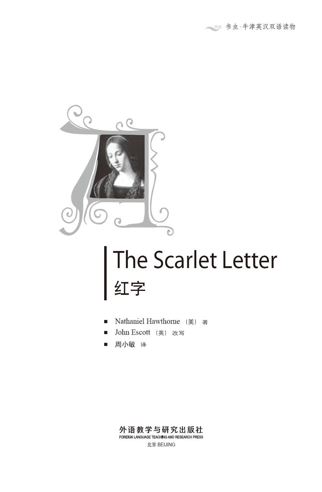
版权页
京权图字 01-2006-3288
Originally published by Oxford University Press, Great Clarendon Street, Oxford. © 2002
This edition is licensed for sale in the People's Republic of China only and not for export therefrom.
'Oxford' is a registered trademark of Oxford University Press.
只限中华人民共和国境内销售，不包括香港特别行政区、澳门特别行政区及台湾省。不得出口。
图书在版编目（CIP）数据
红字 = The Scarlet Letter ／（美）霍桑（Hawthorne, N.）著；（英）埃斯科特（Escott, J.）改写；周小敏译．—北京：外语教学与研究出版社，2006.6（2015.1 重印）
（书虫·牛津英汉双语读物）
ISBN 978-7-5600-5657-9
Ⅰ．红… Ⅱ．①霍…②埃…③周… Ⅲ．①英语—汉语—对照读物②长篇小说—美国—近代 Ⅳ．H319.4：I
中国版本图书馆CIP数据核字（2006）第057592号
出版人： 蔡剑峰
责任编辑：王霖霖
封面设计：孙莉明
出版发行：外语教学与研究出版社
社 址：北京市西三环北路19号（100089）
网 址：http://www.fltrp.com
版 次：2006年8月第1版
书 号：ISBN 978-7-5600-5657-9
* * *
凡侵权、盗版书籍线索，请联系我社法律事务部
举报电话：（010）88817519
电子邮箱：banquan@fltrp.com
法律顾问：立方律师事务所 刘旭东律师
中咨律师事务所 殷 斌律师
内容简介
内容简介
胸前佩戴着红字的这个女人是个没有任何朋友的罪人。人们对她指指点点，那些受人尊重的人都唾弃她，牧师们用尖锐的言辞抨击她。耻辱不分日夜地追随着她。
故事发生在17世纪的新英格兰。当时，清教徒们飘洋过海来到美洲，建立了新的城镇，同时也带来了自己国家的宗教和习俗。在早期马萨诸塞州的波士顿，教会的势力非常强大——非常冷酷无情。任何违背教会和上帝训诫的人都会受到惩罚。
但是对于赫斯特·普林，这个生下私生子的女人来说，她并不是唯一的罪人。那谁是孩子的父亲呢？他为什么不大胆地公开自己的身份？为什么赫斯特要承受胸佩红字的耻辱，而她的情人却可以逃脱惩罚？他不是也同样有罪吗？
THE SCARLET LETTER
THE SCARLET LETTER
The woman who wears the scarlet letter on her bosom is a woman without friends, a woman who has sinned. Fingers point at her, respectable people turn their faces away from her, the priests speak hard words about her. Shame follows in her footsteps, night and day.
Because this is New England in the 1600s. The Puritans have crossed the sea to the shores of America, building their new towns, bringing their religion and their customs with them from the old country. And in the early years of Boston, in the state of Massachusetts, the church is strong—and unforgiving. Anyone who breaks the laws of the church, and of God, must be punished.
But Hester Prynne, whose husband is not her baby's father, did not sin alone. Who is the father of her child? Why does he not speak out? Why should Hester wear the scarlet letter of shame, and not her lover? Is he not guilty too?
目录
Salem, my home town...
The Scarlet Letter
红 字
Salem, my home town...
A
Salem, my home town, is a quiet place, and not many ships call at the port here, though in the last century, before the war with Britain, the port was often busy. Now the ships go down the coast to the great seaports of Boston or New York, and grass grows in the streets around the old port buildings in Salem.
For a few years, when I was a young man, I worked in the port offices of Salem. Most of the time, there was very little work to do, and one day in 1849 I was looking through an old wooden box in one of the dusty, unused rooms of the building. It was full of papers about long-forgotten ships, but then something red caught my eye. I took it out and saw that it was a piece of red material, in the shape of a letter about ten centimetres long. It was the capital letter A. It was a wonderful piece of needlework, with patterns of gold thread around the letter, but the material was now worn thin with age.
It was a strange thing to find. What could it mean? Was it once part of some fashionable lady's dress long years ago? Perhaps a mark to show that the wearer was a famous person, or someone of good family or great importance?
I held it in my hands, wondering, and it seemed to me that the scarlet letter had some deep meaning, which I could not understand. Then I held the letter to my chest and—you must not doubt my words—experienced a strange feeling of burning heat. Suddenly the letter seemed to be not red material, but red-hot metal. I trembled, and let the letter fall upon the floor.
Then I saw that there was an old packet of papers next to its place in the box. I opened the packet carefully and began to read. There were several papers, explaining the history of the scarlet letter, and containing many details of the life and experiences of a woman called Hester Prynne. She had died long ago, sometime in the 1690s, but many people in the state of Massachusetts at that time had known her name and story.
And it is Hester Prynne's story that I tell you now. It is a story of the early years of Boston, soon after the City Fathers had built with their own hands the first wooden buildings—the houses, the churches... and the prison.
needlework n. the things made by sewing 刺绣
scarlet adj. bright red 猩红色的；鲜红色的
塞勒姆，我的家乡
塞勒姆，我的家乡
塞勒姆，我的家乡，是一个平静的地方，没有太多的船只在这里的港口停靠，但在上个世纪我们和英国开战之前，这个港口还挺繁忙的。如今，船只都沿着海岸南下，驶向波士顿或纽约的大港口了。塞勒姆旧港口建筑物周围的街道上蔓生着野草。
我年轻时，曾在塞勒姆的港口办事处工作过几年。大多数时候，我都很清闲，但是在1849年的一天，我在一间布满灰尘、已经废弃不用的房间里查看一个旧木匣子。匣子中塞满了早已被人遗忘的船只的有关文件，有一件红色的东西引起了我的注意。我把它拿出来才发现原来是一片红色的布料，看起来像是一个字母，约有10厘米长，那是个大写的“A”。这是一件精细的针线活儿，金线滚边，不过由于年代久远，布料已被磨得很薄了。
这真是一件很奇怪的东西。它代表什么？它是多年前某位时髦女士衣衫上的一个装饰吗？或许这是一个标志，表明佩戴者声名显赫，或是有良好的家室背景，抑或地位不凡？
我把它捧在手里猜想着，这个猩红的字母似乎有某种深刻的意义，是我不能理解的。我把这个字母贴在胸前——你一定要相信我所说的——我感觉到一种奇特的灼热。突然间，这个字母似乎不再是一片红布，而是变成了一块烧红的金属。我颤抖起来，红字滑落到了地板上。
接着我看到匣子里还有一捆很旧的文件，就放在紧挨着那个红字的地方。我小心地打开了这捆文件读起来。其中的几张纸介绍了红字的历史，包括了一个名叫赫斯特·普林的女人的生平和经历的很多细节。她早已去世，大约是17世纪90年代的事了，但是在当时的马萨诸塞州，有很多人都听到过她和她的故事。
现在我要讲给你们听的就是赫斯特·普林的故事。这个故事发生在波士顿建城之初，在先辈们用双手建成了第一批木质建筑之后，这些建筑有房屋、教堂……还有监狱。
1．Hester Prynne's shame
1
Hester Prynne's shame
On that June morning, in the middle years of the seventeenth century, the prison in Boston was still a new building. But it already looked old, and was a dark, ugly place, surrounded by rough grass. The only thing of beauty was a wild rose growing by the door, and its bright, sweet-smelling flowers seemed to smile kindly at the poor prisoners who went into that place, and at those who came out to their death.
A crowd of people waited in Prison Lane. The men all had beards, and wore sad-coloured clothes and tall grey hats. There were women, too, in the crowd, and all eyes watched the heavy wooden door of the prison. There was no mercy in the faces, and the women seemed to take a special interest in what was going to happen. They were country women, and the bright morning sun shone down on strong shoulders and wide skirts, and on round, red faces. Many of them had been born in England, and had crossed the sea twenty years before, with the first families who came to build the town of Boston in New England. They brought the customs and religion of old England with them—and also the loud voices and strong opinions of Englishwomen of those times.
'It would be better,' said one hard-faced woman of fifty, 'if we good, sensible, church-going women could judge this Hester Prynne. And would we give her the same light punishment that the magistrates give her? No!'
'People say,' said another woman, 'that Mr Dimmesdale, her priest, is deeply saddened by the shame that this woman has brought on his church.'
'The magistrates are too merciful,' said a third woman. 'They should burn the letter into her forehead with hot metal, not put it on the front of her dress!'
'She ought to die!' cried another woman. 'She has brought shame on all of us! Ah—here she comes!'
The door of the prison opened and, like a black shadow coming out into sunshine, the prison officer appeared. He put his right hand on the shoulder of a woman and pulled her forward, but she pushed him away and stepped out into the open air. There was a child in her arms—a baby of three months—which shut its eyes and turned its head away from the bright sun.
The woman's face was suddenly pink under the stares of the crowd, but she smiled proudly and looked round at her neighbours and the people of her town. On the bosom of her dress, in fine red cloth and surrounded with fantastic patterns of gold thread, was the letter A.
The young woman was tall and perfectly shaped. She had long dark hair which shone in the sunlight, and a beautiful face with deep black eyes. She walked like a lady, and those who had expected her to appear sad and ashamed were surprised how her beauty shone out through her misfortune.
But the thing that everyone stared at was the Scarlet Letter, sewn so fantastically on to her dress.
'She is clever with her needle,' said one of the women. 'But what a way to show it! She is meant to wear that letter as a punishment, not as something to be proud of!'
The officer stepped forward and people moved back to allow the woman to walk through the crowd. It was not far from the prison to the market-place, where, at the western end, in front of Boston's earliest church, stood the scaffold. Here, criminals met their death before the eyes of the townspeople, but the scaffold platform was also used as a place of shame, where those who had done wrong in the eyes of God were made to stand and show their shameful faces to the world.
Hester Prynne accepted her punishment bravely. She walked up the wooden steps to the platform, and turned to face the stares of the crowd.
A thousand eyes fixed on her, looking at the scarlet letter on her bosom. People today might laugh at a sight like this, but in those early years of New England, religious feeling was very strong, and the shame of Hester Prynne's sin was felt deeply by young and old throughout the town.
As she stood there, feeling every eye upon her, she felt she wanted to scream and throw herself off the platform, or else go mad at once. Pictures from the past came and went inside her head: pictures of her village in Old England, of her dead parents—her father's face with his white beard, her mother's look of worried love. And her own face—a girl's face in the dark mirror where she had often stared at it. And then the face of a man old in years, a thin, white face, with the serious look of one who spends most of his time studying books. A man whose eyes seemed to see into the human soul when their owner wished it, and whose left shoulder was a little higher than his right. Next came pictures of the tall grey houses and great churches of the city of Amsterdam, where a new life had begun for her with this older man.
And then, suddenly, she was back in the Boston market-place, standing on the platform of the scaffold.
Could it be true? She held the child so close to her bosom that it cried out. She looked down at the scarlet letter, touched it with her finger to be sure that the child and the shame were real. Yes—these things were real—everything else had disappeared.
After a time the woman noticed two figures on the edge of the crowd. An Indian was standing there, and by his side was a white man, small and intelligent-looking, and wearing clothes that showed he had been travelling in wild places. And although he had arranged his clothes to hide it, it was clear to Hester Prynne that one of the man's shoulders was higher than the other.
Again, she pulled the child to her bosom so violently that it cried out in pain. But the mother did not seem to hear it.
The man on the edge of the crowd had been looking closely at Hester Prynne for some time before she saw him. At first, his face had become dark and angry—but only for a moment, then it was calm again. Soon he saw Hester staring, and knew that she recognized him.
'Excuse me,' he said to a man near him. 'Who is this woman, and why is she standing there in public shame?'
'You must be a stranger here, friend,' said the man, looking at the questioner and his Indian companion, 'or you would know about the evil Mistress Prynne. She has brought great shame on Mr Dimmesdale's church.'
'It is true,' said the stranger. 'I am new here. I have had many accidents on land and at sea, and I've been a prisoner of the wild men in the south. This Indian has helped me get free. Please tell me what brought this Hester Prynne to the scaffold.'
'She was the wife of an Englishman who lived in Amsterdam,' said the townsman. 'He decided to come to Massachusetts, and sent his wife ahead of him as he had business matters to bring to an end before he could leave. During the two years that the woman has lived here in Boston, there has been no news of Master Prynne; and his young wife, you see...'
'Ah! I understand,' said the stranger, with a cold smile. 'And who is the father of the child she is holding?'
'That remains a mystery,' said the other man. 'Hester Prynne refuses to speak his name.'
'Her husband should come and find the man,' said the stranger, with another smile.
'Yes, indeed he should if he is still alive,' replied the townsman. 'Our magistrates, you see, decided to be merciful. She is obviously guilty of adultery, and the usual punishment for adultery is death. But Mistress Prynne is young and good-looking, and her husband is probably at the bottom of the sea. So, in their mercy, the magistrates have ordered her to stand on the scaffold for three hours, and to wear the scarlet "A" for adultery for the rest of her life.'
'A sensible punishment,' said the stranger. 'It will warn others against this sin. However, it is wrong that the father of her child, who has also sinned, is not standing by her side on the scaffold. But he will be known! He will be known!'
The stranger thanked the townsman, whispered a few words to his Indian companion, and then they both moved away through the crowd.
During this conversation, Hester Prynne had been watching the stranger—and was glad to have the staring crowd between herself and him. It was better to stand like this, than to have to meet him alone, and she feared the moment of that meeting greatly. Lost in these thoughts, she did not at first hear the voice behind her.
'Listen to me, Hester Prynne!' the voice said again.
It was the voice of the famous John Wilson, the oldest priest in Boston, and a kind man. He stood with the other priests and officers of the town on a balcony outside the meeting-house, which was close behind the scaffold.
'I have asked my young friend' —Mr Wilson put a hand on the shoulder of the pale young priest beside him— 'to ask you once again for the name of the man who brought this terrible shame upon you. Mr Dimmesdale has been your priest, and is the best man to do it. Speak to the woman, Mr Dimmesdale. It is important to her soul, and to you, who cares about her soul. Persuade her to tell the truth!'
The young priest had large, sad brown eyes, and lips that trembled as he spoke. He seemed shy and sensitive, and his face had a fearful, half-frightened look. But when he spoke, his simple words and sweet voice went straight to people's hearts and often brought tears to their eyes.
He stepped forward on the balcony and looked down at the woman below him.
'Hester Prynne,' he said. 'If you think it will bring peace to your soul, and will bring you closer to the path to heaven, speak out the name of the man! Do not be silent because you feel sorry for him. Believe me, Hester, although he may have to step down from a high place and stand beside you on the platform of shame, it is better to do that than to hide a guilty heart through his life. Heaven has allowed you public shame, and the chance to win an open battle with the evil inside you and the sadness outside. Do you refuse to give him that same chance—which he may be too afraid to take himself?'
Hester shook her head, her face now as pale as the young priest's.
'I will not speak his name,' she said. 'My child must find a father in heaven. She will never know one on earth!'
Again she was asked, and again she refused. Then the oldest priest spoke to the crowd about all the evil in the world, and about the sin that brought the mark of the scarlet letter. For an hour or more he spoke, but Hester Prynne kept her place alone upon the platform of shame.
When the hours of punishment were over, she was taken back to the prison. And it was whispered by those who stared after her that the scarlet letter threw a terrible, ghostly light into the darkness inside the prison doors.
mercy n. kindness, pity, and a willingness to forgive 仁慈；宽容；怜悯
magistrate n. someone who judges less serious crimes in a court of law 地方法官；治安法官
misfortune n. very bad luck 不幸
scaffold n. a structure with a raised stage used for killing criminals by hanging them or cutting off their heads 绞刑架
scream v. to make a loud high noise with your voice 尖声大叫
recognize v. to know who someone is or what something is, because you have seen them in the past 认出；辨认出
adultery n. sex between someone who is married and someone who is not their wife or husband 通奸；私通
balcony n. a structure you can stand on that sticks out from the upstairs wall of a building 阳台
ghostly adj. slightly frightening and seeming to be connected with ghosts or spirits 幽灵似的
赫斯特·普林的耻辱
1．赫斯特·普林的耻辱
这是17世纪中期一个6月的早上，当时波士顿的监狱刚刚建成不久，但是看上去已经很旧了。这是一个阴暗、丑陋的地方，四周杂草丛生。唯一美丽的是门旁的一株野玫瑰，它那鲜艳的花朵散发出甜美气息，好像在向那些入狱的犯人或出监赴死的可怜囚徒善意地微笑着。
一大群人等候在监狱外的小道上。男人们都留着胡须，穿着灰暗的衣服，戴着灰色的高顶帽。人群中也有妇女，所有人的视线都集中在监狱那扇沉重的木门上。人们的脸上没有一丝同情，女人们似乎对即将发生的事更有兴致。她们都是些乡下女人，早上明媚的阳光照着她们强壮的肩膀、宽松的裙子和饱满、红润的脸。她们当中的很多人都出生在英格兰，在20年前和最先来到这里的家庭一起横渡大海，在新英格兰这片土地上共同创建了波士顿城。她们带来了英格兰本土的风俗和宗教——也带来了那个时代英格兰妇女特有的响亮嗓门和强烈偏见。
一个五十多岁、一脸刻薄相的女人说：“如果能让我们这些正直、理智、行事符合教规的女性来审判赫斯特·普林就更好了。我们会像治安官那样给她那么轻的判决吗？不会！”
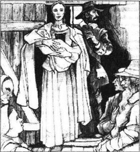
“大家都说，”另一个女人说，“丁梅斯代尔先生，就是她的牧师，因为这个女人给他的教众带来的耻辱，简直伤心透啦。”
“那帮治安官真是太宽大了，”第三个女人说道，“他们应该用烧红的烙铁把那个字母烙在她脑门上，而不是让她戴在胸口。”
“她应该去死！”另一个女人叫嚷着，“她把我们大家的脸都丢尽了！啊——她来了！”
牢门打开了，监狱长像一道出现在日光下的黑影似的走了出来。他右手抓着一个女人的肩头，拽着她向前走，但是她推开了他，自己走了出来。她怀里抱着个孩子——一个三个月大的婴儿。那孩子闭上眼睛，转过头去，好避开那耀眼的阳光。
在众目睽睽之下，那个女人脸上突然泛起红晕，但她却露出高傲的微笑，用目光环视着街坊邻里和同镇居民。她的衣服的前胸上露出了一个用红色细布做成、周边用金线绣成精巧花边的字母“A”。
那年轻妇女身材高挑，体态优美，乌黑的长发在阳光下熠熠生辉。她面容姣好，眸如点漆，走起路来的仪态就像一位淑女。那些原先期待着看她流露出悲惨、羞耻的人，都为她在不幸中所焕发的美丽感到有些意外。
但是，吸引所有人目光的还是在她衣服上绣得精妙绝伦的那个红字。
“她倒做得一手好针线，”一个女人说，“但是居然用这种方法来卖弄！让她佩戴这个字是一种惩罚，而不是什么拿来炫耀的东西。”
监狱长走上前来，人们向后退去，让出了一条路，让这个女人走过去。从牢门到市场没几步路。在市场西端，波士顿最古老的教堂前，竖立着那座绞刑台。就在那里，犯人在众目睽睽下被处死，但是这座刑台也被用作犯人示众之地。在上帝眼中犯了过错的人被带到这里，将他们可耻的面孔展现给世人。
赫斯特·普林勇敢地接受了这个惩罚。她踏着木阶走上刑台，转过身面对着众人的注视。
千百双眼睛盯着她，望着她胸前的红字。这一场景也许会令今天的人们发笑，但是在新英格兰创建之初，宗教的影响十分强大，因此赫斯特·普林的耻辱罪恶深深地震撼着全镇老少。
她站在那儿，感到每只眼睛都盯着自己。她真想尖叫，想从刑台上跳下去，或者马上疯掉。过去的记忆一幕幕浮现在脑海里：故国英格兰的小村，她那已经去世的父母——父亲长着白胡子的面容，母亲担忧而关爱的表情。还有她自己的面孔——在她经常照的那面昏暗的镜子中那个小姑娘的脸。她还想到了另一张脸，那是一个年老男人的面孔，瘦削而苍白，带着一种大多数时间都埋头书卷的人特有的严肃表情。只要这个男人愿意，他那双眼睛似乎就能看到别人的灵魂深处。他左肩比右肩稍高。她脑海里接下来出现的是阿姆斯特丹那高大的灰色房屋和宏伟教堂，在那里她和那个老男人开始了一种崭新的生活。
接着，突然之间，她又回到了波士顿的市场，站在绞刑台上。
这一切都是真的吗？她把胸前的孩子抱得太紧，孩子一下哭了。她低头注视着那猩红的字母，还用指头触摸了一下，以证实婴儿和耻辱都确实存在。是的——这些都是现实——其余的一切幻境全都消失了。
不久，这个女人注意到人群边上站着两个人。一个是印第安人，在他身边是一个白人，那人身材矮小，看上去很有智慧。他的穿着显示出曾去荒蛮之地游历过。虽然他已经用衣服做了掩饰，赫斯特·普林还是看出这个男人的肩膀一边高一边低。
她再一次把婴儿紧紧搂在胸前，孩子疼得哭起来。但作母亲的好像根本没听到。
站在人群边上的那个男人，在赫斯特·普林看到他之前，便已经紧紧盯了她好一会儿了。起初，他满脸怒气——但就只有那么一会儿，后来就恢复了平静。不久，他发现赫斯特凝望着他，就知道她已经认出他来了。
“请问，”他问站在旁边的一个男人，“这个女人是谁？为什么要站在那里当众受辱？”
“你肯定不是本地人吧，朋友，”那个人一边回答，一边打量着提问的人和他的印第安同伴，“要不然，你一定听说过这个罪孽深重的普林太太。她使丁梅斯代尔先生的教堂蒙受了奇耻大辱啊。”
“您算说对了，”那人说，“我刚到此地，我在陆上和海上遭遇了很多风险，在南方，我还成了野蛮人的囚徒。这个印第安人帮我获得了自由。请问这位赫斯特·普林是因为什么被押上绞刑台的呢？”
“那女人的丈夫是个英国人，原来住在阿姆斯特丹，”镇上的这个人说，“他决定搬到马萨诸塞来，可是还有生意没完，因此他先把妻子送来了。这女人在波士顿住了两年，那位普林先生始终没有一点儿音讯；而他这位年轻的老婆，你看……”
“啊！我明白了。”外地人冷笑着说，“那她抱着的那个孩子的父亲是谁呢？”
“那还是一个谜呢。”另一个说，“赫斯特·普林不肯说出他的名字。”
“她的丈夫应该来找出那个男人。”外地人又冷笑着说。
“要是他还活着，是该这么做。”镇上那人回答说，“你看，我们的长官决定从宽处理。她犯的显然是通奸罪，对通奸的惩罚通常是死刑。但是普林太太年轻漂亮，而且她的丈夫可能已经葬身海底了。所以，那些长官大发慈悲，只命令普林太太在绞刑台上站三个小时，不过在她的有生之年，胸前要永远佩戴那个代表通奸的‘A’字。”
“合理的判决！”那外地人说，“这可以告诫人们不要再犯这样的罪。不过，孩子的父亲也犯下了罪过，却没有和她一起站在绞刑台上，这可不对。不过他会被发现的！他一定会被发现的！”
他谢过镇上那个人，又跟他的印第安同伴耳语了几句，然后两人便穿过人群离开了。
他们谈话的这段时间里，赫斯特·普林一直盯着那外地人——她很庆幸他们当中隔了一群旁观者。这样站着，总比他们俩单独相对要好受一些，她很怕跟他会面的时刻。她想得出了神，甚至一开始都没有听到身后传来的声音。
“听我说，赫斯特·普林！”那声音又说道。
这个声音发自德高望重的约翰·威尔逊牧师——波士顿最年长的牧师，一位和蔼可亲的人。他与镇上其他的牧师和官员站在议事厅的阳台上，就在绞刑台的后面。
“我已经请我这位年轻的朋友”——威尔逊先生把手放在身旁那位面色苍白的青年牧师的肩膀上——“再问你一次，请坦白说出那个男人的名字，是他给你带来了奇耻大辱。丁梅斯代尔先生是你的牧师，让他来问你最合适不过了。规劝这个女人吧，丁梅斯代尔先生。这对拯救她的灵魂至关重要；对你也是，因为是你为她的灵魂负责。规劝她说出真相吧！”
这位青年牧师有一双忧郁的棕色大眼睛，说话的时候他嘴唇颤抖。他看上去羞涩而敏感，脸上流露出一种紧张而近乎惊恐的神色。但是当他说话的时候，他那简练的语句和优美的声音直达人的内心深处，经常使人热泪盈眶。
他在阳台上迈步向前，俯视着下面的那个女人。
“赫斯特·普林，”他说，“如果你觉得这样做可以使你的灵魂得到平静，并且使你离通向天堂之路更加接近，就说出那个男人的名字！不要因为对他抱有怜悯而保持沉默。相信我吧，赫斯特，虽然那样会令他跌下高位，和你并肩站在这耻辱的高台上，但这总比让他终生隐藏着一颗罪恶的心灵要好得多。上天让你承受这种公开的污辱，同时也给了你机会，让你战胜内心的罪恶和外在的悲哀。你不想给他相同的机会吗？也许他自己过于胆怯，不敢主动接受这样的机会。”
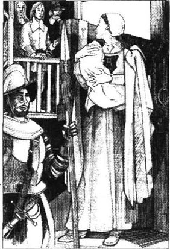
赫斯特摇了摇头，此刻她的脸变得和那个青年牧师一样苍白。
“我不会说出他的名字。”她说，“我的孩子一定会在天堂找到父亲。她永远不会知道她人世间的父亲。”
她再一次遭到问询，再一次拒绝回答。那位最年长的牧师对人群发表了一通论述世间所有罪恶的演讲，其中包括招致那个红字的罪恶。在长达一个多小时的演讲中，赫斯特·普林始终独自站在耻辱台上。
数小时的惩罚结束后，她被带回监狱。一些人盯着她的背影窃窃私语，说看到她胸前的红字在监狱大门内的黑暗中投下了一道可怕而诡异的闪光。
2．Roger Chillingworth's secret
2
Roger Chillingworth's secret
Back inside the prison, Hester Prynne became strangely fearful and excited. The prison officer, Master Brackett, watched her carefully, afraid that she would do something violent, either to herself or to the child. By night-time, unable to quieten her, and worried about the child who screamed without stopping, Brackett decided to bring a doctor to her.
He described him to Hester as someone who had learned much about natural medicines from the Indians. But the man who followed Brackett into the prison was the man Hester had seen on the edge of the crowd earlier, the man she had watched in fear. His name, she was told, was Roger Chillingworth.
Brackett brought the man in, and stood watching in surprise as Hester became as still as death. The child, however, continued to cry.
'Please leave us alone,' Chillingworth said to the prison officer, 'and you will soon have peace in your house.'
He had entered the room calmly, carrying a small bag, and he remained calm after Brackett had left them. First he went to the child and looked carefully at her. Then he opened his bag, took out some powder, and put it into a cup of water.
'Here, woman!' he said. 'The child is yours, not mine. Give this to her.'
Hester did not move, and when she spoke, her voice was a whisper. 'Don't take your revenge on an innocent child.'
'Silly woman!' he replied, half coldly, half kindly. 'If this poor, miserable baby was my own—mine, as well as yours! —I would give her the same medicine.'
Hester still hesitated, so he took the child and gave her the medicine himself. Almost at once she became quiet, and after a moment fell peacefully asleep.
Chillingworth prepared another drink of medicine and held out the cup to Hester. 'Drink it!' he said. 'It cannot quieten your troubled soul, but it will calm you.'
She took it from him slowly, but her eyes were full of doubt about his reasons for helping her. Then she looked at her sleeping child.
'I have thought of death,' she said. 'I have wished for it, and even prayed for it, but if death is in this cup, then I ask you to think again before I drink it.'
'You need not be afraid,' he replied calmly. 'If I wanted revenge, then what more could I ask for than to let you live—and suffer, under the shadow of this shame?'
As he spoke, he put his finger on the scarlet letter, which suddenly seemed to burn red-hot on Hester's bosom.
She drank the medicine quickly, then sat down on the bed where the child was sleeping. She watched, trembling as the man she had wronged pulled up a chair and sat beside her.
'Hester,' he said, 'you've been weak, but I've been stupid. Look at me! I'm old and ugly. I was ugly from the moment that I was born. But you? You were young and beautiful, and full of life. How could I have imagined, the day that I married you, that you would ever love me? How could a man of books and learning be so stupid?'
'I never felt or pretended any love for you,' said Hester.
'True,' he replied. 'But I hoped to make you love me.'
'I have greatly wronged you,' Hester whispered.
'We have wronged each other,' he said. 'I'm not looking for revenge, Hester. I wish you no harm. But there is a man living who has wronged us both! Who is he?'
'Do not ask me!' she cried, looking straight at him. 'You will never know his name!'
His smile was both dark and confident. 'Believe me, Hester,' he said, 'I shall know him! Although he does not wear a letter of shame on his clothes, as you do, I shall read it on his heart. I shall see it in his eyes. I shall watch him tremble, and I will feel myself tremble with him. But don't be afraid. I won't hurt him, or harm his position in the town if he is an important man here. Nor shall I inform the law. No, let him live! Let him pretend to be an honest man! Heaven will punish him for me. But I will know him!'
'You say you will not harm him,' said Hester, confused and afraid, 'but your words frighten me.'
'One thing I ask you—you, who were my wife,' he said. 'You have kept your lover's secret, now keep mine! Tell nobody that you ever called me husband. No one in this land knows me. But here, on this wild edge of the earth, I shall stay, because you and yours, Hester Prynne, belong to me. Love or hate, right or wrong, my home is where you are and where he is. But keep my secret!'
'Why do you want this?' said Hester, suddenly afraid of this secret agreement, although she did not know why. 'Why not say openly who you are, and send me away at once?'
'Perhaps because I do not want to hear what people say about a husband who loses his wife to another man,' he said. 'Let them think your husband is already dead. Pretend not to know me. Do not tell our secret to anyone, and most of all, not to your lover. Do not fail in this, Hester! Remember, his good name, his position, his life will be in my hands!'
'I will keep your secret, as I have kept his,' said Hester.
'And now, Mistress Prynne,' said the man called Roger Chillingworth, 'I will leave you alone with your child and the scarlet letter!' He smiled, slowly.
Hester stared at him, afraid of the expression in his eyes.
'Why do you smile at me?' she asked. 'Have you tied me into an agreement that will destroy my soul?'
'Not your soul,' he answered, with another smile. 'No, not yours!'
powder n. a dry substance in the form of very small grains 粉末
innocent adj. not guilty of a crime 无罪的
wrong v. treat or judge someone unfairly 冤枉；亏待
confused adj. mixed up in one's mind 困惑的
罗杰·奇林沃思的秘密
2．罗杰·奇林沃思的秘密
赫斯特·普林回到监狱之后，便陷入一阵莫名的恐惧和激动之中。监狱看守布拉克特长官小心翼翼地观察着她的一举一动，担心她会做出什么过激的事情来，伤害她自己或孩子。到了夜里，布拉克特长官依然无法使她平静下来，同时也很担心那一直哭个不停的孩子，于是决定请个医生来看看。
布拉克特长官向赫斯特介绍说，那位医生从印第安人那里学过不少天然药物的知识。但是跟在布拉克特身后走进牢房的那个男人正是赫斯特早些时候在人群边上看到的人——当时她充满恐惧地看着他。布拉克特向她介绍说，此人名叫罗杰·奇林沃思。
布拉克特把那人领进牢房，吃惊地发现赫斯特突然像死人一样僵住了，但那个孩子还继续哭着。
“请让我们单独呆一会儿，”奇林沃思对监狱看守说道，“这间牢房很快就会安静下来的。”
他走进牢房时很平静，携带着一个小包。布拉克特离开以后，他也依然镇定自若。他先走到孩子身边仔细看了看，接着打开小包，取出一些粉末，倒进一杯水中。
“听我说，女人！”他说，“这个孩子是你的，不是我的。你把这个给她喝下去吧。”
赫斯特没有动。当她开口的时候，声音小的近乎耳语：“不要拿一个无辜的孩子来报复吧。”
“你这个蠢女人！”那医生不冷不热地应道，“即使这个可怜的孩子是我自己的——我的，也是你的！——我也会给她同样的药。”
赫斯特仍然迟疑不决，他便抱起孩子，亲自给她喂了药。她几乎立即平静了下来，过了一会儿，就乖乖地进入了梦乡。
奇林沃思调了另一杯药水递给赫斯特。“把它喝了！”他说，“它不能平息你躁动的灵魂，但是可以使你镇静下来。”
她慢慢地接过杯子，但目光中充满了怀疑，不知道他帮忙的目的何在。她接着又看了看那熟睡的孩子。
“我想到过死，”她说，“我希望去死，甚至还为此祈祷过，不过，要是这杯药可以致我于死地，在我喝下去之前，我请求你再想一想。”
“你不用害怕，”他平静地回答，“如果我想复仇，我最大的愿望就是让你活着——让你在这种耻辱的阴影下受尽折磨。”
他一边说着，一边把手指放到那红字上，那字立刻像是在赫斯特的胸膛上灼烧起来。
赫斯特将药一饮而尽，然后坐到孩子睡的床上。看着这个她曾经辜负的人拉过一把椅子坐在身边，她不由得全身颤栗起来。
“赫斯特，”他说，“你一直那么软弱，可是我却一直那么愚蠢。看看我！我又老又丑。我从生下来的那一刻就是丑的。但是你呢？你那时年轻漂亮，充满活力。我娶你的时候怎么会以为你会爱上我呢？像我这样一个饱读诗书的男人为什么会如此愚蠢？”
“我对你从没有任何爱意，也没假装有过。”赫斯特说。
“这倒是真的，”他答道，“但是我曾经希望能使你爱上我。”
“我太委屈你了。”赫斯特喃喃地说。
“我们彼此都让对方受了委屈。”他回答说，“我不想报复你，赫斯特，我对你没有恶意。可那个让我们都受了委屈的人还活着，他是谁？”
“不要问我！”她叫道，直视着他。“你永远也不会知道他的名字！”
他脸上露出阴沉和自信的笑意。“相信我，赫斯特，”他说，“我会把他找出来的！尽管他并没有像你这样，在衣服上绣着个耻辱的字母，但是我会在他的心里看到的，会在他眼睛里看到的。我要看着他浑身颤抖，我都能感到自己会和他一起颤栗了。不过不要害怕，我不会伤害他，如果他在这里是一个显赫人物的话，我也不会对他的地位造成什么损害。我不会告发他的。不，我要让他活着！让他假装是一个诚实的人！上天会代我惩罚他。但是我肯定能找出他是谁！”
“你说你不会伤害他，”赫斯特困惑而惊恐地说，“但是你的话让我害怕。”
“我只要求你——我曾经的妻子——做一件事。”他说，“既然你一直都为情人保密，那就也为我保密吧！不要告诉任何人，你曾称我为丈夫。这片土地上没有人认识我。可就在这里，这世界的荒芜边缘，我要留下来，因为赫斯特·普林，你和你的一切都属于我。爱也好恨也好，对也罢错也罢！你和他在哪儿，我的家就安在哪儿。但你要为我保守这个秘密！”
“你为什么要这样做？”赫斯特问，她突然为这个秘密约定而感到莫名的恐惧。“你为什么不公开你的身份，把我立刻赶走呢？”
“可能因为我不愿意听见别人议论我戴了绿帽子。”他说，“让大家都以为你丈夫已经死了吧。装作不认识我！不要把我们的秘密告诉任何人，尤其是你的情人。不要违背诺言，赫斯特！记住，他的名声、地位和性命全都握在我的手心里！”
“我为你保密，就像为他保密一样。”赫斯特说。
“现在，普林太太，”这个自称罗杰·奇林沃思的男人说，“我要走了，留下你守着孩子和那个红字吧！”他慢慢地笑了。
赫斯特瞪着他，被他的眼神吓坏了。
“你冲我笑什么？”她问道，“你是不是把我绑在一个会毁掉我的灵魂的协议上了？”
“不是你的灵魂。”他说着，又露出一丝笑容。“不，不是你的！”
3．A fatherless child
3
A fatherless child
Hester Prynne's time in prison now came to an end, but she did not move away from the town. The father of her child lived here, and here she would stay; although she kept this thought hidden guiltily in her heart. The reason she gave herself for staying was this: 'I sinned here, and I will suffer my earthly punishment here.'
There was a small cottage just outside the town, looking out across the sea towards the forest-covered hills of the west, and Hester and her child went to live in this lonely little house. They had no friends, but Hester soon found that she could earn enough money to buy food and clothes for herself and her daughter.
She was clever with a needle, and the scarlet letter which she wore on her bosom was a perfect example of her work that everyone could see. Soon, Hester's beautiful sewing, with its patterns in gold and silver thread, became the fashion with the rich and important people of the town. Her needlework was seen on the shirts of the Governor, on the fine dresses of the ladies, on the babies' little coats and hats, and on the burial-clothes of the dead. Hester had employment for as many hours as she wanted to work.
She used whatever time she had left to make clothes for the poor people of the town, although she got no thanks for it. And indeed, she found no kindness anywhere. The Puritans of that time were hard judges, and a woman who had sinned as Hester had sinned was always an outsider. Every word, every look, every cold, accusing silence reminded her of the shame and the lonely misery of her life. Even the children ran after her in the street, shouting terrible names.
She lived very simply. Her own dresses were made from dark, sad-coloured cloth, with the scarlet letter bright on the bosom. Her child's clothes were the opposite—in materials of deep, rich colours, with beautiful patterns sewn in gold thread.
Her daughter's name was Pearl. She was a pretty child, but a child of many moods—one minute bright and happy and loving, the next minute dark and angry. A child of sin, she had no right to play with the children of godly families and, like her mother, she was an outsider. In a strange way Pearl seemed to understand this, and often screamed and threw stones at the other children. Hester worried about her daughter's wildness and tried hard to correct her, but without much success. Sometimes, her only hours of peace and quietness were when Pearl was sleeping.
One day, when Pearl was about three years old, Hester went to the house of Governor Bellingham. She was taking a fine shirt she had sewn, but she also wanted to speak to the Governor in person. She had heard that many Puritans in the town wanted to take Pearl away from her. They said it would be better for the child to grow up in a more godly home than Hester Prynne's.
So it was a worried Hester who walked to the Governor's house that morning. She had dressed her daughter in a beautiful red dress, adding to the child's natural beauty, and as Pearl danced along beside her mother, it had a strange effect. The child in her red dress seemed like the scarlet letter in another shape; the scarlet letter given life and movement.
At the Governor's house the door was opened by a servant.
'Is the Governor in?' asked Hester.
'Yes,' replied the servant. 'But there are people with him at the moment. You can't see him now.'
'I'll wait,' said Hester, and stepped into the entrance hall.
The hall was wide with a high ceiling, and there were heavy chairs along one side and a long table in the centre. At the far end of the hall was a big glass door, which opened out into a garden. Hester could see rose bushes and apple trees, and Pearl immediately began to cry for a red rose.
'Shh! Bequiet, child!' said her mother. 'Look, the Governor is coming down the garden path, with three more gentlemen.'
Governor Bellingham, with his grey beard, walked in front. Behind him came John Wilson, the old priest, whose beard was as white as snow; and behind him was Arthur Dimmesdale, with Roger Chillingworth. The young priest's health had been poor for some time, and Roger Chillingworth, well known in the town for his knowledge of medicines, was now both friend and doctor to him.
The Governor pushed open the door—and found himself looking at Pearl, while Hester stood in the shadow of a curtain, half-hidden.
'What have we here?' said Governor Bellingham, surprised to see the little scarlet figure in front of him.
'Yes, what little bird is this?' said old Mr Wilson. 'Who are you, child?'
'My name is Pearl,' answered the little girl.
'Pearl?' replied the old priest. 'But where is your mother? Ah! I see her now.' He turned to the Governor and whispered, 'This is the child we were talking about, and look, here is the unhappy woman, Hester Prynne, her mother!'
'Is that right?' cried the Governor. 'She comes at a good time. We will discuss the matter now.' He stepped through the door into the hall, followed by his three guests. 'Hester Prynne, we have been asking many questions about you recently. Are you the right person to teach this child the ways of God, and so make sure of a place in heaven for her soul? You, a woman who has sinned! Will it not be better for her if we take her away from you, and teach her the truths of heaven and earth? What can you do for her, woman?'
'I can teach my little Pearl what I have learned from this!' answered Hester Prynne, putting her finger on the scarlet letter. 'Every day, it teaches me lessons that I pass on to my child. She will be a better and wiser person than I ever was.'
Bellingham turned to the old priest. 'Mr Wilson, see what this child knows,' he 'said.
The old priest sat down in one of the heavy chairs and tried to bring Pearl across to him, but she escaped through the open door and stood on the step outside, looking like a richly coloured bird ready to fly away.
'Pearl,' said Mr Wilson, with a serious look on his face. 'Listen to me, child. Can you tell me who made you?'
Now Pearl knew the answer very well, because Hester had told her about God many times, and had explained those things which every child should know. But Pearl put her fingers in her mouth and would not speak.
'You must answer good Mr Wilson's question,' said her mother. 'Please, Pearl! Tell him what you know.'
'My mother picked me from the wild rose bush that grows outside the prison door!' said Pearl.
Roger Chillingworth smiled and whispered something in the young priest's ear.
'This is terrible!' cried the Governor. 'The child is three years old, and she does not know who made her! I do not think, gentlemen, that we need to ask any more!'
Hester pulled Pearl towards her and held her hand. 'God gave me the child,' she cried. 'She is my happiness, my pain! You shall not take her! I will die first!'
'My poor woman,' said the old priest, kindly, 'we will find someone who will take care of the child far better than you can.'
'God gave her to me!' repeated Hester, her voice high and afraid. 'I will not let her go!' She turned to Mr Dimmesdale. 'Speak for me!' she cried. 'You were my priest, and you know me better than these men. You know what is in my heart, and how strongly a mother feels when she has nothing except her child and the scarlet letter!'
The young priest stepped forward, his face white and nervous, and with pain in his large dark eyes.
'There is truth in what she says,' he began. His voice was sweet and gentle, but it seemed to ring through the hall like a bell. 'God gave her the child, and is that not part of God's plan for this poor, sinful woman? With the child by her side, every day she will be reminded of her great sin, her shame; and the pain and sadness of it will always be with her. But God has given her a job to do, which will keep her soul alive and save her from further sin. She must love and care for the child, and teach it the ways of God, to know good from evil, right from wrong. And, with God's great mercy, if she brings the child to heaven, then the child also will bring its mother there! No, no, we should leave the mother and child together, and let God's gift do its work saving the mother's soul!'
'You speak, my friend, with a strange passion,' said old Roger Chillingworth, smiling at him.
'And my young friend speaks wisely,' said Mr Wilson. 'What do you think, Governor? Does he speak well for the poor woman?'
'Indeed he does,' replied Governor Bellingham. 'He argues sensibly, and so we will leave things as they are. Master Dimmesdale, you shall be responsible for making sure that the girl receives the right teaching, and that she goes to school when she is old enough to do so.'
The young priest now stood at the side of the group, his face half-hidden by the heavy window curtain. Pearl, that wild and playful little thing, moved softly towards him, took his hand, and put it gently against her cheek. Her mother watched, surprised. 'Is that my Pearl?' she thought, although she knew there was love in the child's heart. And Mr Dimmesdale looked round, put a hand on Pearl's head, hesitated for a moment, then kissed her forehead. Little Pearl laughed and half-ran, half-danced down the hall.
'A strange child!' said old Roger Chillingworth. 'It is easy to see that she is her mother's daughter. But could a clever man guess, from the child's nature and from the way she behaves, the name of her father?'
'It is better to pray for an answer to that question, than to try to guess,' said Mr Wilson. 'Better still to leave it a mystery, so that every good and godly man can show a father's kindness towards the poor fatherless child.'
Hester Prynne and her daughter then left the house. As they went down the steps, a window was thrown open and a head appeared. It was Governor Bellingham's sister, Mistress Hibbins, calling down to invite Hester to a party with the Devil in the forest that night. Some people said that Mistress Hibbins was more than a little mad; others said she was truly a friend of the Devil. Mad, evil, a friend of the Devil, or all three, no one knows, but a few years later she was judged to be a witch and was killed on the scaffold.
'No, thank you!' Hester called back to her, with a smile. 'If they ever took Pearl away from me, I would go with you and sign my name in the Devil's book, even in blood! But little Pearl is still with me, and so I must stay at home and keep watch over her.'
earthly adj. on earth rather than in heaven 尘世的
Puritan n. member of a Protestant religious group in the 16th and 17th centuries, who wanted to make religion simpler 清教徒（16世纪和17世纪基督教一教派成员，主张简化宗教仪式）
bush n. a low thick plant 灌木
beard n. hair that grows around a man's chin 胡须；络腮胡子
richly adv. having beautiful strong colours 色彩浓艳的
remind v. to make someone remember someone that they knew or something that happened in the past 使（某人）想起
passion n. a very strong deeply felt emotion 强烈的情感；激情
witch n. a woman who is supposed to have magic powers, especially to do bad things （尤指做坏事的）女巫
没有父亲的孩子
3．没有父亲的孩子
赫斯特·普林的监禁期满了，但是她并没有离开这座城镇。孩子的父亲住在这里，所以她要留下来；虽然她充满罪恶感地把这个念头隐藏在心里。她让自己相信留下来的理由是：“我在这里犯下了罪孽，也应该在这里接受尘世间的惩罚。”
镇外有一间小茅屋，与西边一片森林覆盖的小山隔海相望。赫斯特就带着孩子住进了这间孤零零的小茅屋。她们没有朋友，但是赫斯特不久就发现，她可以挣到足够的钱供自己和孩子吃穿之用。
她的针线活儿做得很好，她胸前佩戴的红字就是她好手艺的一个最佳样品，大家有目共睹。没过多久，赫斯特用金银线绣出来的漂亮图案就开始成了镇里达官贵人们追崇的时尚。她的针线活儿出现在总督的衬衫上、贵妇的精致衣裙上、婴儿的小外衣和小帽子上，还用在寿衣上。赫斯特想做多少活儿就有多少活儿干。
她用全部的闲暇时间来给镇上的穷人做衣服，尽管从来没有人感谢过她。实际上，她到哪儿都感受不到友好的气息。当时的清教徒都是严苛的审判者，像赫斯特这种犯下罪过的女人永远都只能被人排斥。每句话、每个眼神、每次冰冷而充满谴责意味的沉默都在提醒她，她的生活里充满了耻辱、孤独与凄凉。甚至小孩子们都在街上追着骂她。
她过着一种十分简朴的生活，自己的衣服都用阴郁、灰暗的布料缝制，只有胸前的那个红字光鲜亮丽。她孩子的衣服却截然相反——布料的颜色鲜艳夺目，上面用金线绣着美丽的图案。
她的女儿名叫珍珠，是个漂亮的孩子，可是情绪多变——前一分钟还开朗、快乐、活泼可爱，接下来就变得阴沉、愤怒。她是罪孽的产物，没有权利和那些崇敬上帝的人家的孩子玩耍。和她的母亲一样，她也四处遭人排斥。珍珠似乎以奇异的方式理解了这一切，她经常尖叫着抄起石子向其他孩子扔去。赫斯特为女儿身上流露出来的野性担心，她努力去纠正，但是没有任何作用。有时，只有珍珠睡着以后她才能得到片刻的安宁。
珍珠大约三岁时，有一天，赫斯特去了贝林厄姆总督的宅邸。她去送一件缝制好的上等衬衣，此外她还想和总督当面谈谈。她听说镇上有很多清教徒打算将珍珠从她身边夺走。他们认为把孩子移交给比赫斯特·普林更崇敬上帝的家庭更有利于她的成长。
所以那天早上赫斯特是忧心忡忡地走向总督宅邸的。她给女儿穿了一件漂亮的红色外衣，这让本来就漂亮的孩子又增色不少。珍珠蹦蹦跳跳地跟在母亲身旁，给人一种奇怪的感觉。穿着红色外套的孩子像是另一种形式的红字，被赋予了生命和活动能力的红字。
到了总督家门前，一个仆人为她们开了门。
“总督大人在吗？”赫斯特问。
“是的，”那仆人回答，“但是他现在有客人。此刻你不能见大人。”
“我可以等。”赫斯特说着走进门厅。
厅里很开阔，天花板高高的，一边摆了几把沉重的椅子，厅中间放了一张长条桌。门厅尽头是一扇大玻璃门，通向花园。赫斯特可以看到花园里的玫瑰花丛和苹果树，珍珠立刻叫嚷着要一朵红玫瑰。
“嘘，安静点儿，孩子！”她母亲说，“看，总督顺着花园的小路走过来了，还有三位先生跟他在一起呢。”
留着灰胡子的贝林厄姆总督走在前面。约翰·威尔逊牧师跟在他身后，这位年长的牧师胡须像雪一样白；在他身后的是阿瑟·丁梅斯代尔牧师和罗杰·奇林沃思。年轻的牧师最近一段时间身体不好，而罗杰·奇林沃思对医药的丰富知识在城镇中无人不晓，此时已经成了牧师的医生兼朋友。
总督推开门——发现了眼前的珍珠，但窗帘的阴影罩住了赫斯特·普林的部分身形。
“这是谁呀？”贝林厄姆总督吃惊地望着眼前这个鲜红的小人儿。
“是啊，这个小丫头是谁呢？”威尔逊老先生说道，“孩子，你是谁啊？”
“我叫珍珠。”小姑娘回答道。
“珍珠？”老牧师答道，“可你妈妈在哪儿呢？啊！我现在看到她了。”他转向总督耳语道：“这就是我们刚才谈论的那个孩子，看，这就是那个不幸的女人，赫斯特·普林，就是她母亲！”
“是吗？”总督大声道，“她来得正好。我们现在就来谈谈这件事吧。”他进门走到大厅里，三位客人紧随其后。“赫斯特·普林，最近我们讨论了很多关于你的事。你能够按上帝的法则教育这个孩子，并确保她的灵魂可以上天堂吗？你，一个犯了罪的女人！我们把她带走，教导她天堂和尘世的真理，不是更好吗？你又能为这孩子做些什么呢，女人？”
“我能教我的小珍珠从这里学到的东西！”赫斯特·普林把手指放到那个红色字母上回答，“这个字每天都会给我教训，我再把这些道理教给孩子。她会成为一个比过去的我更好、更明智的人。”
贝林厄姆转过身对着老牧师。“威尔逊先生，请来检查一下这个孩子都知道些什么。”他说。
老牧师在一把沉重的椅子上坐下来，想把珍珠拉到面前，但是她穿过敞开的门逃了出去，站在外面的台阶上，像一只色彩斑斓的鸟儿似的，随时准备飞走。
“珍珠，”威尔逊先生一脸严肃地说，“听我说，孩子，你能告诉我是谁创造出你的吗？”
珍珠很清楚答案是什么，因为赫斯特跟她多次谈过上帝，也对她解释过每个孩子都应该知道的事情。但是珍珠把手指放到嘴里并不回答。
“你必须回答威尔逊先生的问题。”她的母亲说，“求你了，珍珠！把你知道的事情告诉他。”
“妈妈从长在监狱门边的野玫瑰丛里把我捡回来的。”
罗杰·奇林沃思微笑着对年轻的牧师耳语了几句。
“这太可怕了！”总督叫道，“这孩子都三岁了，还根本不知道是谁创造了她！依我看，先生们，我们无需再问下去了。”
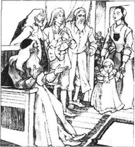
赫斯特把珍珠拉到自己身边，握住她的手。“上帝给了我这个孩子！”她大声说道，“她是我的幸福，也是我的痛苦！你们不能带走她！否则我就先死给你们看！”
“可怜的女人，”那老牧师怜悯地说，“我们会找到一个比你更合适的人照顾这孩子的。”
“上帝把这孩子给了我！”赫斯特高声重复说，声音里充满了恐惧。“我绝不会让她离开我！”她转向了丁梅斯代尔先生。“替我说句话吧！”她说，“你曾是我的牧师，你比这些人更了解我。你了解我心里的想法，也了解一个母亲，一个除了孩子和红字一无所有的母亲，这种感受有多么强烈！”
年轻的牧师走上前来，他的面色苍白、紧张，黑色的大眼睛里满是痛苦。
“她所说的有道理，”年轻的牧师开口说。他的声音优美柔和，但却像钟声一样在大厅中回荡。“上帝赐给她这个孩子，这难道不是上帝给这个有罪的可怜女人的旨意吗？让孩子跟在她身边，这样每天她都会记着自己的巨大罪恶和耻辱；痛苦和悲伤将永远跟随她。因为这是上帝给她的使命，这样可以保持她灵魂的活力，防止她陷入更深的罪孽。她必须按上帝的准则爱护和照顾这个孩子，教给她上帝之道，教她学会分辨善恶、判断正误。因上帝的慈悲，如果她能把孩子送上天国，那么孩子也就能把她带到天国！不，我们还是让这个孩子和她的母亲在一起吧，让上帝赐予的这个孩子去拯救母亲的灵魂！”
“我的朋友，你讲这番话真是激动得出奇啊。”老罗杰·奇林沃思笑着对他说。
“而且，我这年轻朋友的话满有道理。”威尔逊先生说，“你怎么看，总督先生？他为这可怜的女人所做的请求很有道理吧？”
“确实如此，”贝林厄姆总督回答，“他说得很有道理。我们只好让事情一切照旧喽。丁梅斯代尔先生，你要负责监督这个孩子接受正确的教育，再有，等她到了适当的年龄，要送她上学。”
年轻的牧师此时站在其他人的一边，厚重的窗帘挡住了他的部分面孔。珍珠，那野性子的小顽皮鬼，轻手轻脚地溜到他身旁，握住他的手，还把小脸贴在上面。她的母亲惊讶地看着。“那是我的珍珠吗？”她想，尽管她明白，这孩子的心中是有爱的。丁梅斯代尔环顾四周，将一只手放在孩子的头上，迟疑了一会儿，然后吻了她的额头。珍珠笑起来，蹦蹦跳跳地朝大厅另一头跑去。
“一个奇特的孩子！”老罗杰·奇林沃思说道，“一眼就能看出，有其母必有其女。不过聪明的人能通过这孩子的天性和举止猜出谁是她的父亲吗？”
“要知道这个问题的答案，还是靠祈祷吧，比猜测要好。”威尔逊先生说，“而最好就是留着这个秘密不去管它。这样，每一个信奉上帝的好男人便都能对这没有父亲的可怜孩子表示父爱了。”
赫斯特·普林带着女儿离开了总督府。在她们走下台阶的时候，有人打开了一扇窗子，探出头来，那是总督的姐姐希宾斯太太。她向赫斯特喊话，邀请她去参加当天晚上在树林中和魔鬼的聚会。有些人说希宾斯太太神经不正常；还有些人说她是魔鬼的好朋友。她要么是神经不正常，要么就是个邪恶的人，要么就是魔鬼的朋友，或者三者都是，没人能确定。但在若干年之后，她被认定为女巫，在绞架上被处决了。
“不了，谢谢！”赫斯特笑着回答说，“要是他们把珍珠从我身边夺走，我也许会跟你去，在魔鬼的名册上也签上我的名字，哪怕是要用血来签呢！但是小珍珠还和我在一起，所以我必须留在家里照顾她。”
4．A man sent by the Devil
4
A man sent by the Devil
For three years the man calling himself Roger Chillingworth had made his home in the town. Only Hester Prynne knew the secrets of his past life, which he had put behind him, but he held the lock and key to her silence and felt quite safe. His plans had changed. There were new, darker arrangements to make; new, secret things to do with his time. He had studied medicine and knew enough for other people to accept and welcome him as a doctor. Medical men were difficult to find in New England at that time.
Soon after his arrival, he became friendly with Mr Dimmesdale, and made the young man his religious guide. It was at this time, however, that the young priest's health began to fail. He grew thin and pale; his voice, though still rich and sweet, now had a sadness and tiredness about it. And sometimes, when he was alarmed by something, he would put his hand over his heart, and his eyes would fill with pain.
The young priest was greatly respected in the town; people thought he was a selfless and deeply religious man. They worried that his long hours of study and hard work for the church were damaging his health, so they were pleased when Roger Chillingworth became a friend of the young man and also offered to be his doctor. 'God has sent this man to help our priest!' they said.
But Mr Dimmesdale would not listen to his friends, and gently turned away all advice. 'I need no medicine,' he said.
But how could he say so when each week his face became paler and thinner; his voice trembled more than before; and putting his hand over his heart became a habit? Was he tired of his work? Did he wish to die?
The older priests put these questions to him, and reminded him that refusing medical help—perhaps help sent by God—was a sin. Mr Dimmesdale listened in silence, and finally promised to take advice from the doctor.
'Though if God wished it,' he said, 'I would be happy to leave behind my work, my worries and my sins and be buried in my grave.'
* * *
So this was how the mysterious Roger Chillingworth became the medical adviser of Mr Arthur Dimmesdale. The two men, one young and one old, began to spend much time together, walking along beside the sea or in the forest, often collecting plants to use for making medicines. Chillingworth watched and listened to his patient, asking questions carefully, digging deeper and deeper into the other man's thoughts and feelings. They spoke about public and private things; about health and religion; even about personal matters. But no secret, however much Chillingworth suspected there was one, ever came out of their discussions.
After a time, at the suggestion of Roger Chillingworth, the friends of Mr Dimmesdale arranged for the two men to live in the same house. They thought it was the best and most sensible arrangement, at least until Mr Dimmesdale decided to marry some suitable young lady. (Although for some reason they did not understand, the young man refused to even think about marriage.) Now the good doctor could keep an even closer watch on their young friend's health.
The house was next to the town's graveyard, and Mr Dimmesdale had an apartment in the front of the building, where he could enjoy the morning sun and where there was plenty of room for his many books. In rooms on the other side of the house, Roger Chillingworth arranged his papers, and the special things needed for making medicines.
However, not all the townspeople were happy. Many people suspected that the mysterious doctor was not all he pretended to be. One old man, who had come from London more than thirty years ago, was sure that Chillingworth had lived in that city, using another name. Others spoke of the change in the man since he had come to live in the town. At first, his expression had been calm, thoughtful, the face of a man who spent his time studying. Now, there was something ugly and evil in his face. Some people even believed that Chillingworth had been sent by the Devil and was after the young priest's soul. Everyone, however, was confident that Mr Dimmesdale would be the winner of this battle.
As the months and years went by, the change in Roger Chillingworth grew greater. He had begun with the calmness of a judge, wanting only to know the truth. But as he continued, the need to know burned in him like a fever, and he dug into the priest's soul, like a man searching for gold. And poor Mr Dimrnesdale, sick at heart, too afraid to call any man his friend, could not recognize an enemy either.
One day, he was in Chillingworth's room, looking out of the window at the graveyard opposite, while the older man was arranging some plants that he had collected.
'Where did you get the plants with the dark leaves?' the priest asked Chillingworth.
'From the graveyard,' answered the other man. 'I found them growing on a grave without a gravestone, or anything to tell me the dead man's name. Perhaps these black plants grew out of a heart that hid some terrible secret, one that was buried with him.'
'Perhaps the poor man wanted to tell it, but could not,' said Mr Dimmesdale. He was silent for a while, then went on, 'Tell me, doctor, is my health any better since you began to take care of this poor, weak body of mine?'
Before Chillingworth could answer, they heard a young child laughing. The sound came from the graveyard, and the priest looked down from the open window and saw Hester Prynne and little Pearl walking along the path. Pearl looked as beautiful as the day, but was behaving badly. She jumped from grave to grave, finally dancing on one of the larger graves until her mother called out to her.
'Pearl, stop it! Behave yourself!' cried Hester Prynne.
The girl stopped, but only to collect the purple flowers from a tall plant. She took a handful of them, and fastened their needle-like edges to the scarlet letter on her mother's dress. Hester did not pull them off.
Roger Chillingworth had joined Mr Dimmesdale at the window. 'That child has no respect for others,' he said, 'no idea of right or wrong. I saw her the other day throwing water at the Governor himself! What, in heaven's name, is she? A child of the devil? Has she no kindliness in her?'
'I do not know,' replied Mr Dimmesdale, quietly.
The girl probably heard their voices. She looked up, laughed, then threw one of the purple flowers at Mr Dimmesdale. And when the young priest jumped back with a little cry, she was delighted and laughed even louder.
Hester Prynne also looked up at that moment, and all four of these persons now stared at each other silently until the child laughed again, and shouted:
'Come away, mother! Come away, or that nasty old man up there will catch you! He has already caught the priest! But he won't catch little Pearl!' And she pulled her mother away, then danced off between the graves.
'There goes a woman,' said Roger Chillingworth, after a pause, 'who cannot hide her shame. It is there, for all to see. But is Hester Prynne more, or less, miserable than people who keep their sinfulness hidden?'
'I cannot answer for her,' said Mr Dimmesdale, his face pale. 'There was a look of pain in her face which it hurt me to see, but I think it must be better for sinners to be free to show their pain, as this poor woman Hester does, than to cover it all up in their heart.'
There was another pause, then the doctor said, 'You asked a little while ago for my opinion on your health.'
'I did,' said Mr Dimmesdale. 'Speak freely. Do not be afraid to tell me the truth, whether it is good news or bad.'
'Your illness is a strange one,' said Chillingworth, going back to his plants. 'I find it difficult to understand. Let me ask you, as a friend as well as your doctor, have you told me everything? Is there anything you have not told me which might help me find the true reason for your illness?'
'How can you ask?' replied the priest. 'It would be stupid to call in a doctor and then hide the injury.'
Roger Chillingworth stared hard at the other man's face. 'Yes, but the injury or evil we can see is often only half the problem,' he said. 'Sometimes it is the sickness of a man's soul that is the reason for his sick body. And then, how can a doctor help his patient to get better unless his patient tells him what is troubling his soul?'
'No, not to you!' cried Mr Dimmesdale, his eyes suddenly wild and bright. 'Only God can save a man whose sickness is a sickness of the soul! Let him do with me what he will! But who are you to involve yourself in this matter? Who are you to stand between a sufferer and his God?'
And he ran angrily from the room.
Roger Chillingworth smiled to himself. 'Nothing is lost. We shall be friends again. But look how his passion takes hold of him! He has done a wild thing before now, this godly Mr Dimmesdale, in the hot passion of his heart.'
Not long afterwards, as expected, the young priest returned and apologized. He asked his friend to continue to care for him, and the doctor agreed to do so.
* * *
A few days after this, Mr Dimmesdale falls asleep in his chair, while reading in his study. Later, Roger Chillingworth comes into the room and sees that the other man is sleeping. He steps forward, and pulls open the priest's shirt.
After a short pause, he turns away, but with what a wild look of wonder, joy, and horror!
alarm v. to make people very worried 使……恐慌，不安
turn away to refuse 拒绝
suspect v. to think something is probably true 怀疑
opposite adj. one thing that is opposite another is on the other side of the same area, often directly across from it 对面的；相对的
purple adj. a dark colour that is a mixture of red and blue 紫色的
fasten v. fix sth. to sth. 固定
nasty adj. unpleasant 不友善的
patient n. someone receiving medical treatment from a doctor 病人；患者
魔鬼派来的人
4．魔鬼派来的人
三年过去了，这个自称罗杰·奇林沃思的人在镇上定居下来。只有赫斯特知道他隐藏起来的过去的秘密，但是他掌握着让她缄口不言的锁和钥匙，并且觉得很安全。他的计划已经改变了。更加阴险的新计划即将形成；他要花时间做一些新的秘密活动。他学过医药，对此的研究已经使他被人们认可为一名医生。当时在新英格兰，精通医术的人尚不多见。
他来到此地不久，就对丁梅斯代尔先生很友好，还让这个年轻人作他的宗教导师。就在此时，丁梅斯代尔先生的身体开始渐渐衰弱下去。他变得苍白消瘦；他的嗓音虽仍然丰润甜美，却含着忧郁和疲惫。有时，他会突然被惊动，然后用手捂住心口，眼睛里充满了痛苦。
这位青年牧师在城镇中很受尊敬，人们都认为他是一个无私而虔诚的教徒，担心他钻研学问过多，教区工作太重，会损害他的健康，因此当他们看到罗杰·奇林沃思和这个青年人成为朋友并自告奋勇成为他的医生后，都感到很欣慰。“上帝派了这个人来帮助我们的牧师。”他们说。
但丁梅斯代尔先生却没有听从朋友们的建议，他委婉地拒绝了所有的善意。“我不需要吃药。”他说。
但他怎么能这样讲呢？每过一周，他的面颊就会变得越发苍白消瘦；声音也比先前颤抖得更加厉害；而且他用手捂住心口的动作已经变成了一种习惯。难道他厌倦了工作？难道他想死吗？
年长的牧师们向他提出质疑，并且提醒他医药的帮助或许是上帝赐予的福旨，对此加以拒绝可是有罪的。丁梅斯代尔先生默默不语地听着，终于答应听取医生的建议。
“虽说这是上帝的旨意，”他说，“可我宁愿丢下工作、烦恼和罪孽，被埋葬在坟墓之中。”
* * *
就这样，神秘的老罗杰·奇林沃思成了阿瑟·丁梅斯代尔先生的健康顾问。这一老一少开始常常一起活动：在海滨、林中长时间散步，经常采集一些植物用于制药。奇林沃思观察着他的病人，听他说话，仔细地提问，越来越深地探究他的思想和情感。他们所谈的涉及公事和私事，健康和宗教，甚至涉及个人的隐私。医生虽然揣测这里肯定是有秘密的，但他们的讨论却始终没能把任何秘密揭露出来。
过了一段时间，在罗杰·奇林沃思的建议之下，丁梅斯代尔先生的朋友们安排他俩住在了同一栋房子里。他们认为这是最好、最合理的安排，至少是在丁梅斯代尔先生决定娶某位年轻女士为妻之前。（尽管出于一些他们无法理解的原因，这个青年人想都不愿意去想婚姻的问题。）现在，这位良医可以更加密切地关注他们年轻朋友的健康了。
他俩的房子紧挨着镇上的墓地，丁梅斯代尔先生住前面一个套间，在这里他可以享受早上的阳光，还有宽敞的地方可以放置丰富的藏书。在房子另一侧的几间屋子中，罗杰·奇林沃思安放了他的资料和各种制药用的特殊器具。
然而，并非镇上的所有居民都对此表示欢迎。很多人都怀疑这个神秘的医生根本就不像他所表现出的那样。有一位三十多年前从伦敦来的老人非常确定地说，奇林沃思曾经住在伦敦，当时叫的是另外一个名字。还有一些人说，罗杰·奇林沃思自从在镇上定居以来发生了明显的变化。起初，他外表安详，若有所思，一派学者模样。而如今，他脸上却是一种丑陋而邪恶的表情。一些人甚至认为奇林沃思是魔鬼的使者，要攫取这位青年牧师的灵魂。不过每个人都相信丁梅斯代尔先生会是这场战役的胜利者。
随着时间的流逝，奇林沃思的变化越来越明显。起初他带着裁判者的冷静而来，那时他只想找出真相。但是随着计划的展开，迫切想知道答案的愿望就像高烧一样折磨着他。他像一个淘金者一样掘进牧师的灵魂。而可怜的丁梅斯代尔先生由于内心的折磨，惧怕把任何人视为朋友，因此也无法辨认出谁是敌人。
一天，他待在奇林沃思的房间里，透过窗子看着对面的墓地，而老人正在整理采集来的一些植物。
“你从哪里找到这些黑叶子植物的？”牧师问奇林沃思。
“墓地里。”医生回答说，“在一座坟墓上发现的，坟前没有墓碑，也没别的东西表明死者的名字。可能这种黑色植物是从死者的心里长出来的，那颗心里藏着可怕的秘密，随着他一起埋葬了。”
“也许这个可怜的人是想说出来的，但他就是办不到。”丁梅斯代尔先生说。他沉默了片刻，接着说：“告诉我，医生，从您开始照顾我这虚弱、可怜的身体以来，我的健康状况是否有所好转？”
奇林沃思还没来得及回答，他们就听到了一个小孩子的笑声。这笑声从墓地里传来。牧师从打开的窗子向外望去，只见赫斯特·普林和小珍珠在小径上走着。珍珠看上去和白昼一样美丽，但是十分淘气。她从一个墓上跳到另一个坟墓上，最后在一个比较大的坟墓上跳起舞来，直到她母亲把她叫住。
“珍珠，别跳了！乖一点儿！”赫斯特·普林喊道。
珍珠停了下来，又开始从一株高大的植物上采摘紫色的小花。她摘了满满一把之后，便把针尖一样的花边别在母亲衣服上的红字周围。赫斯特并没有把它们取下来。
罗杰·奇林沃思和丁梅斯代尔先生一起站到窗前。“那孩子对别人一点儿都不敬重。”他说，“也没有是非概念。那天我看到她竟然往总督身上泼水！我的天，这到底是个什么孩子啊？难道她是恶魔的孩子吗？难道她的天性中一丝善良都没有吗？”
“我不知道。”丁梅斯代尔先生静静地回答。
那孩子可能是听到了他们的声音。她笑着抬起头来，朝丁梅斯代尔先生扔来一朵紫色小花。年轻的牧师将身子向后一闪，发出了一声轻呼，珍珠高兴起来，笑得更开心了。
此时，赫斯特·普林也抬起头来，于是这四个人便谁也不说话地面面相觑，直到孩子又笑起来，大叫着：
“走吧，妈妈！走吧，要不上面那个讨厌的老头就来抓你了！他已经抓住了牧师。可他抓不住小珍珠！”然后她蹦蹦跳跳地拽着母亲从坟墓间走开了。
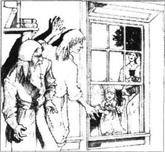
“那个女人，”罗杰·奇林沃思沉默了一会儿后接着说，“无法掩饰她的耻辱，那耻辱就在那儿，所有人都看得到。和那些把罪恶隐藏起来的人比，赫斯特·普林的痛苦是多还是少呢？”
“我无法为她作答。”丁梅斯代尔先生说，他的脸色苍白。“她脸上有一种痛楚的表情，我看了觉得很难过。但是我认为，一个犯了罪的人能够像这可怜的妇人赫斯特这样，可以自由地表达自己的痛苦，总比全都闷在心里好。”
又是一阵沉默，医生说：“刚才你问我对你的健康有何看法。”
“是啊，”牧师回答说，“我请你坦率地讲出来，别怕告诉我真相，是好是坏都没关系。”
“你的病很奇怪。”奇林沃思一边说着一边又摆弄起他的那些植物。“我觉得很困惑。让我以朋友和医生的双重身份来问你，你是否已经把一切都告诉我了呢？是不是还有什么没对我说？也许这些事恰恰可以帮我找出你真正的病因。”
“你怎么会这样问？”牧师回答道，“请来医生，却又向他隐瞒病情，这不是很愚蠢嘛。”
罗杰·奇林沃思目光炯炯地盯着牧师的面孔。“是的，不过通常我们肉眼可以看到的伤病或罪恶只是问题的一半。”他说，“有时，身体有病的原因很可能是灵魂染疾。如果病人不坦白说出是什么在折磨自己的灵魂，医生是没有办法帮助他恢复的。”
“不！我不会对你说！”丁梅斯代尔先生喊叫起来，他的眼睛突然变得狂野，闪着光亮。“只有上帝可以救治灵魂上的疾病。让他随心所欲地处置我吧。可是，你算什么？竟要来插一手？竟敢置身于受磨难的人和他的上帝之间？”
他愤怒地冲出了房间。
罗杰·奇林沃思暗自笑道：“一无所失。我们很快还会重新成为朋友的。不过看看吧，激情如何完全左右了这个人！这位虔诚的丁梅斯代尔先生，以前也曾在内心激情的驱使之下，干出过荒唐事来！”
不久之后，就像他预料的那样，年轻的牧师回来道歉，请求他的朋友继续照料他，医生同意了。
* * *
几天后，丁梅斯代尔先生在书房里看书时，坐在椅子上睡着了。后来，罗杰·奇林沃思走进他的房间，发现他睡着了，于是走上前，扯开了牧师的衬衣。
医生稍停了一瞬，转身走了。然而，他的表情却那么狂野，交织着惊奇、欢乐和恐惧！
5．A night on the scaffold
5
A night on the scaffold
After this discovery, Roger Chillingworth's plan slowly changed. Although he appeared calm and gentle, without passion, there was inside him a deep, slow-burning cruelty, an evil wish to bring a terrible revenge on his enemy. The priest's guilty sadness was a weapon in his merciless hands. Every day he played, like a cat with a mouse, with the fear and the shame lying hidden in the young man's soul.
But on the outside he was still a friend, kindly and smiling. Arthur Dimmesdale could feel something evil watching him, but he did not know what it was. He looked with doubt and fear—at times even with hate—at the figure of the old doctor; then he would punish himself for these unkind thoughts, blaming them on the guilt and shame eating away at his heart.
And all this black trouble in his soul had made him more famous and popular as a priest than ever. To the people in his church, he seemed very close to God, a man full of gentleness and understanding of the pain and suffering of others.
More than once, Mr Dimmesdale prepared himself to speak to his people about the black secret of his soul. More than once he stood in front of them in church, took a deep breath, and told them... what? He told them he was the worst of sinners, hateful, dishonest, unclean, an evil thing in the sight of God. But did they understand? No! They listened, and then told each other how lucky they were to have a man like this for their priest. Only a strong and godly man, they said, could speak so openly about his weaknesses.
Arthur Dimmesdale could find no peace in his heart. He could not sleep at night, but would sit staring at his face in a mirror, hour after hour. Often, as he looked, his own face would be replaced by the accusing faces of others—dead friends from long ago, his white-bearded father, his mother. And worst of all, Hester Prynne, walking with little Pearl and pointing her finger first at the scarlet letter on her bosom, and then at the priest's own chest.
One sleepless summer night, seven years from the time when Hester stood in public shame on the scaffold, the priest sat up suddenly in his chair. An idea had come to him.
'There might be a moment's peace in it,' he said to himself, and softly went down the stairs and out into the night.
He walked silently through the dark streets to the place of Hester Prynne's first hours of public shame—the scaffold. The priest went up the steps to the platform.
It was midnight, and the town was asleep. Clouds covered the sky, and Mr Dimmesdale could stand there until morning without fear of discovery. Why, then, was he here? What had made him come? Guilt? Shame? He did not know. But a feeling of great horror went through his whole body, and he cried out a terrible scream, which echoed through the night, from one house to another and to the hills beyond the town.
'It is done!' whispered the priest, covering his face with his hands. 'The whole town will wake up and find me here.'
But the people of the town did not wake up, or if they did, they imagined the cry was something which came from their dreams. When he heard no sounds of feet hurrying towards him, the young priest uncovered his eyes and looked around. At a window in Governor Bellingham's house, which was not far away, he saw the Governor himself, in his white nightshirt, with a light in his hand.
'He looks like a ghost,' thought Mr Dimmesdale. And after a moment, the light disappeared from the window.
The priest became calmer. Then he noticed another light, coming towards him along the street. As it came nearer, he saw that the person carrying it was the old priest, Mr Wilson.
'He has been praying at the bedside of some dying man,' thought Mr Dimmesdale.
And so he had. The old priest was now on his way home from the death-bed of Mr Winthrop, who had just died.
As Mr Wilson passed by the scaffold, Mr Dimmesdale found it difficult not to speak...
'Good evening to you, Father! Please come up and spend a pleasant hour with me!'
Good heavens! Had Mr Dimmesdale actually spoken? For one moment he believed that these words had passed his lips, but he had only imagined them. Mr Wilson walked on, looking ahead, not once turning towards the platform.
'I shall be too cold to move soon,' Mr Dimmesdale thought. 'I won't even be able to walk down the steps.' Crazy pictures passed before his eyes. 'Someone will find me here in the early morning, and will run around knocking on doors. Everyone will hurry out in their night-clothes—Governor Bellingham, with his buttons undone; his sister, mad Mistress Hibbins, staring with her wild eyes; and good Father Wilson too, tired after spending half the night at a death-bed. Yes, everyone in the world will come running! And who will they see? They will see their priest, half-frozen to death, covered with shame, and standing where Hester Prynne once stood!'
Now he began to laugh, loudly and wildly, unable to stop himself. Then he heard an answering laugh—a child's laugh—and his heart jumped. It was little Pearl.
'Pearl!' he cried. 'Little Pearl!' Then more softly, 'Hester! Hester Prynne, are you there?'
'Yes, it is me,' Hester Prynne replied. She sounded surprised. 'It is me, and my little Pearl.'
'Where have you come from, Hester?' he asked.
'From Mr Winthrop's death-bed,' she said. 'I've measured him for his burial-clothes, and I am now going home.'
'Come up here, Hester, you and little Pearl,' said the priest. 'You have both been here before, but I was not with you. Come up now, and all three of us shall stand together.'
Hester silently climbed up the steps and stood on the platform, holding Pearl's hand. The priest found and held the child's other hand, and immediately felt a warm, strong feeling in his heart, filling it with new life.
Pearl looked up at the priest. 'Will you stand here with mother and me tomorrow, Mr Dimmesdale?' she whispered.
'No, my little Pearl,' answered the priest. The moment of passionate feeling had passed. Already, he was trembling, and all his fear of public shame had returned. 'I shall stand with you and your mother one day, but not tomorrow.'
'When?' Pearl asked. 'What day?' She tried to pull her hand away from the priest's.
'The great judgment day,' he whispered. 'Then, and there, your mother and I must stand together. But not before then; not in the daylight of this world.'
Before he had finished speaking, a light appeared, far and wide in the night sky. It was almost certainly caused by a meteor, and it lit up the whole street like day. And there stood the priest, with his hand over his heart; and Hester Prynne, with the scarlet letter on her bosom; and little Pearl standing between these two, looking up at the priest with a playful smile. She pointed across the street, but he put both his hands across his chest and looked up at the sky.
However, he knew that little Pearl was pointing her finger at a man standing near the scaffold—Roger Chillingworth. Did the priest see him too? Or, in the strange unearthly light, did he see only the evil smile, the hate behind the eyes, and believe that he was seeing the Devil himself?
The meteor disappeared as suddenly as it had appeared. Mr Dimmesdale, now trembling with terror, said, 'Who is that man, Hester? Do you know him? I hate him, Hester!'
She remembered her promise, and was silent.
'Who is he? Who is he?' cried Mr Dimmesdale. 'Can you do nothing for me? I have a horror of the man!'
'I can tell you who he is,' said little Pearl.
'Quickly, then, child,' said the priest. 'Whisper to me!'
But the child whispered meaningless words into the priest's ear, and laughed.
'Why are you playing games with me?' said the priest.
'You would not promise to hold my hand, and my mother's hand, here tomorrow,' replied the child.
The doctor was now by the platform. 'Mr Dimmesdale!' he said. 'Have you been walking in your sleep? Come, my dear friend, let me take you home.'
'How did you know I was here?' asked the priest, fearfully.
'I did not know,' said Chillingworth. 'I have been with Mr Winthrop, doing what little I could for a dying man. Now I am on my way home. Come with me, please, or you will not be well enough to do your work tomorrow. You should not study so hard, good sir!'
'I will go home with you,' said Mr Dimmesdale, defeated. And, like someone waking up from an ugly dream, he followed the doctor back to their house.
cruelty n. a willingness or desire to make people or animals suffer 残忍；残酷
accusing adj. an accusing look from someone shows that they think that you have done something wrong 非难的；遣责的
echo v. if a sound echoes, you hear it again because it was made near something such as a wall or hill （声音）回响；发出回声
pleasant adj. enjoyable and making you feel happy; nice 令人愉快的；惬意的
passionate adj. very eager 热切的；强烈的
meteor n. a piece of rock or metal that floats in space, and makes a bright line in the night sky when it falls through the Earth's atmosphere 流星
meaningless adj. not having a meaning that you can understand or explain 不可理解的
绞刑台上的一晚
5．绞刑台上的一晚
自从这个发现之后，罗杰·奇林沃思的计划开始慢慢改变。他虽然表面上平静、温和、不露声色，然而心中却深深埋藏着深重的恶意，准备向敌人发起无情的复仇。牧师那带有罪恶感的悲痛在他残忍的手中成为一件武器。他每天就像猫捉老鼠一样，玩弄着深藏在那个青年灵魂深处的恐惧和羞耻。
但表面看来他依旧是牧师的朋友，总是和和气气地微笑着。阿瑟·丁梅斯代尔可以感觉到有一种邪恶的东西在窥视他，但是又不明所以。他带着疑惑与恐惧——有时甚至是憎恨——盯着老医生的身影；但紧接着他又会为这种不友善的想法而惩罚自己，认为这是侵蚀自己内心的负罪感和羞耻在作祟。
这些阴暗的念头困扰着他的灵魂，反而使他成了一位比以往更出名、更受欢迎的牧师。对于他的教众来说，他几近乎上帝；他和善温顺、对他人的痛苦和不幸充满了理解。
不止一次，丁梅斯代尔先生准备向他的教众倾吐灵魂深处那阴暗的秘密。在教堂中，他不止一次站在他们面前，深吸一口气，告诉他们……告诉他们什么呢？说他是个罪孽无比深重的人，可恶、虚伪、不洁净，是上帝眼中邪恶的化身。但是他们明白他的意思了吗？没有！他们听完后只是互相议论，说有这样一个牧师是多么幸运的事。他们说，只有一个坚定和虔诚的人才会这样坦诚地谈论自身的软弱。
阿瑟·丁梅斯代尔无法求得内心的平静。他晚上无法入睡，只能长时间地坐在镜子前盯着自己的脸。他常常看着看着就发现自己的脸变成了一些责备的面孔——那是很久以前逝去的朋友们，他那须发花白的父亲，还有他的母亲。最折磨人的是，还有赫斯特·普林，她带着珍珠走来，先用手指指着胸口的红字，然后又指指牧师的胸口。
在一个难以入睡的夏日夜晚，此时距赫斯特站在绞刑台上当众受辱已经七年了，牧师从椅子上突然坐直。一个新的念头在他心中油然而生。
“这样也许会获得片刻宁静。”他对自己说，然后蹑手蹑脚地走下楼梯，走进夜色中。
他悄无声息地穿过漆黑的街道，来到当初赫斯特·普林最早公开受辱的地点——绞刑台。牧师沿着台阶走上平台。
此时正当午夜，整个城镇都在睡梦之中。阴云笼罩着夜空，丁梅斯代尔在那儿站到早上都不用担心被人发觉。可他为什么会在这儿呢？是什么驱使他来的呢？是负疚感，还是羞耻心？他不知道。但是一种巨大的恐惧贯穿了他的整个身体，他发出了一声恐怖的喊叫，这喊叫在黑夜中回荡，从一户人家传到另一户人家，一直传到小镇远处的丛山之中。
“这下完了！”牧师用双手遮住脸，喃喃自语道，“全镇的人都会惊醒，发现我在这儿。”
但是镇上的人并没有惊醒，就算醒了，也会误以为这喊叫是梦中发生的事情。年轻的牧师没有听见任何匆匆赶来的脚步声，便不再捂着眼，开始四下张望。不远处是贝林厄姆总督的宅邸，他看到穿着白色睡衣的总督从窗口探出头来，手中拿着一盏灯。
“他看起来像鬼魂一样。”丁梅斯代尔先生想。过了一会儿，那盏灯从窗口消失了。
牧师渐渐平静下来。接着，他注意到又有一点灯光正沿街逐渐向他靠近。灯光越来越近，他看到举着灯的正是老牧师威尔逊先生。
“他一定是刚从某个垂死的人的床边祈祷归来。”丁梅斯代尔先生想。
事实果然如此。温斯罗普先生刚刚去世，老牧师正在回家的路上。
当威尔逊先生走过绞刑台时，丁梅斯代尔先生忍不住要脱口而出……
“晚上好，神父！请你上来陪我好好待上一小时吧！”
天啊！丁梅斯代尔先生当真说出声了吗？一刹那间，他觉得这些话确实已经说出了口，其实那只是他的想象。威尔逊先生依旧朝前走去，眼睛看向前方，根本没朝绞刑台这边转过来。
“我一会儿就会冻僵的。”丁梅斯代尔先生想，“怕是连台阶都下不去了。”一些疯狂的画面闪现在他眼前。“一大早就会有人看到我在这里，接着就会跑去挨家挨户地敲门。每个人都会匆匆忙忙地穿着睡衣跑过来——贝林厄姆总督肯定连扣子都来不及扣就跑出来；他的姐姐，疯女人希宾斯会瞪圆那双粗野的眼睛；好心的威尔逊神父也会来的，他在死者的床边熬了半夜，肯定疲惫不堪。是的，世上所有人都会跑过来。他们会看到谁呢？他们的牧师——冻得半死，正满面羞惭地站在赫斯特·普林曾经示众的地方！”
这时牧师开始狂笑起来，笑得无可遏止。忽然他听到了一声回应——一个小孩子的笑声——他的心提了起来：那是小珍珠。
“珍珠！”他喊道，“小珍珠！”然后他柔声叫道：“赫斯特！赫斯特·普林！是你在那儿吗？”
“是的，是我。”赫斯特·普林答应着，语调中充满诧异。“是我，还有我的小珍珠。”
“你从哪里来，赫斯特？”牧师问道。
“从温斯罗普先生家里，”赫斯特·普林回答说，“我给他量了尺寸做寿衣，现在正回家去。”
“上这儿来吧，赫斯特，你，还有小珍珠。”牧师说，“你们母女俩以前都曾在这儿待过，可是我当时没和你们在一起。上来吧，这样我们三个人就站在一起了！”
赫斯特牵着珍珠的手默默地踏上台阶，站到了台上。牧师摸到孩子的另一只手，握在自己手里。他立刻感到一种温暖、强烈的感觉涌入心房，仿佛注入了新的生命力。
珍珠抬起头看着牧师，悄声问道：“明天你也跟妈妈和我一块儿站在这儿吗，丁梅斯代尔先生？”
“不，我的小珍珠。”牧师回答说。瞬间的激情消失了，他颤栗起来，对当众蒙羞的种种恐惧又重新回到他的心头。“总有一天，我会跟你妈妈和你站在一起，不过明天还不成。”
“什么时候？”珍珠问道，“哪一天？”她极力想把手从牧师手里抽出来。
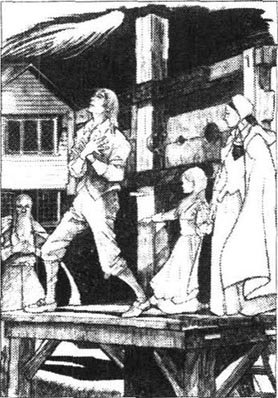
“在最后审判日。”牧师低声说，“到了那一天，你妈妈，还有我，必须站在一起。但在那之前不行，在这个世界的光天化日之下是不行的！”
丁梅斯代尔先生还没说完，夜空中便远远地闪过一道宽阔的亮光。那无疑是一颗流星，将整条街道照得如同白昼一般。牧师就站在那儿，手捂着心口；赫斯特·普林也站在那儿，胸前戴着红字；还有小珍珠，站在他们中间，调皮地笑着，抬头看着牧师。她指指街道对面。但牧师双手交叉捂在胸前，仰望着天空。
然而，他知道小珍珠指的是站在绞刑台近旁的一个人——那是罗杰·奇林沃思。牧师也看见他了吗？或者，在这神异的光亮中，他只看到了那狞笑，那眼底的恨意，并由此认为看到了魔鬼的真身？
流星又突然消失了，就如它突然出现一样。丁梅斯代尔先生恐惧得发抖：“那个人是谁，赫斯特？你认识他吗？我恨他，赫斯特！”
她记起了她的诺言，默不作声。
“他是谁？他是谁？”丁梅斯代尔先生喊着，“你就这样袖手旁观？我对这个人害怕极了！”
“我能告诉你他是谁。”小珍珠说。
“那就快说吧，孩子。”牧师说道，“小声对我说！”
但是这个孩子在他耳边嘀咕了几个莫名其妙的词，就笑起来。
“你为什么要拿我开心？”牧师说。
“因为你不愿意答应明天在这里拉着我和妈妈的手！”孩子回答道。
这时医生已走到平台下。“丁梅斯代尔先生！”他说，“你是在梦游吗？来吧，我亲爱的朋友，让我带你回家。”
“你怎么会知道我在这儿？”牧师惊惧地问。
“我并不知道。”奇林沃思回答，“我一直在温斯罗普先生那儿，尽我所能为一个垂死的人尽点绵薄之力。现在正要回去。请跟我走吧，不然明天你会不舒服，没法工作了。你不该那么刻苦地钻研学问，亲爱的先生。”
“我跟你一起回家。”丁梅斯代尔先生垂头丧气地说，好似失魂落魄一般。他就像刚从噩梦中惊醒一样，跟着医生回住处去了。
6．Hester meets the enemy
6
Hester meets the enemy
That meeting with Mr Dimmesdale on the scaffold worried Hester Prynne greatly. She saw the young priest's weakness and his misery, and how close he was to madness; she heard the terror in his voice as he asked her for help. And she decided he had a right to all the help she could give him.
Her position in the town was now rather different. In the seven years since Pearl was born, Hester had worn the scarlet letter patiently and had led a hard-working and blameless life. People no longer hated her; some even respected her.
'She is always ready to give what she can to the poor,' they said, 'although she gets little thanks for the food she takes to them, or the clothes she makes for them.'
And whenever a house was darkened by trouble, Hester was there with warm and kindly words, and the offer of help. But when sunshine came again, she left without looking back or waiting for the grateful thanks of those who had been troubled. And afterwards, when she saw them in the street, she did not lift her head to speak to them but put her finger on her scarlet letter of shame, and passed by.
Beneath her calmness, however, there had often been great loneliness and suffering. These had made her strong and she now felt able to face the man who had once been her husband. It was clear to Hester that this man was the priest's secret enemy, playing the part of a friend and helper, and slowly but surely driving the priest into madness.
In short, she decided to talk to Roger Chillingworth, and to do what she could to stop his cruel and evil revenge.
She did not have long to wait. One afternoon, while walking with Pearl along the beach, she saw the old doctor with a basket in one hand and a stick in the other. He was collecting plants.
'Go down to the water and play while I talk to this gentleman,' Hester told her daughter.
The child flew away like a bird, her small white feet making patterns in the wet sand at the edge of the sea. Her mother walked up to Roger Chillingworth.
'I would like to speak to you,' she said.
'Ah! Mistress Hester!' he answered. 'I hear news of your good work from everyone I speak to. Only yesterday a magistrate whispered to me that the officers of the town were discussing whether the scarlet letter could now be taken off your bosom. "You should do it at once," I told him.'
'It is not for some magistrate to take off this letter,' Hester replied calmly. 'When—if ever—I earn the right to be rid of it, it will fall off without anyone's help.'
'Wear it, then, if you want to,' said Chillingworth. 'It is a fine piece of needlework and looks well on your bosom.'
While they spoke, Hester had been watching him closely and was full of wonder at the change she saw in him. He was no longer the calm, intelligent man she remembered; now there was a cruel, searching look in his eyes, and a cold half-smile came and went on his face. Seven years of getting enjoyment from a cruel revenge had left the Devil's mark on him. His soul seems to be on fire! Hester thought.
'I want to speak to you about Mr Dimmesdale,' she said.
'And what about him?' cried Roger Chillingworth. 'Speak freely, and I will answer.'
'When we last spoke together, seven years ago,' Hester said, 'you made me promise not to tell anyone that we once lived as husband and wife. I agreed to be silent because, as you said then, his position and his life were in your hands. But I see now that I was wrong to keep silent. Since that day, you have been beside him, sleeping and waking. You search his thoughts and his heart, and each day you cause him to die a living death! And it is I who have allowed this to happen!'
'What else can you do?' asked Chillingworth. 'A word from me, and this man would be thrown from his church into a prison—and from there, to the scaffold!'
'Perhaps that would be better!' said Hester. 'Haven't you had your revenge? Hasn't he suffered enough for his sins?'
'No!' answered the doctor. 'Do you remember me, Hester, as I was nine years ago? You thought I was cold, perhaps, but was I not kind and true, and a good friend to others?'
'Yes,' said Hester. 'All that, and more.'
'And what am I now?' he asked, and his face showed the evil that was in him. 'A devil! And who made me this?'
'It was me,' said Hester, trembling. 'Me, as much as he. So why didn't you punish me?'
'You had the scarlet letter,' he said. 'That was enough revenge for me.' He put his finger on it with a smile. 'Now, what do you want to say about this man?'
'I must tell him the truth about you,' said Hester. 'He must know who you are, and why you are doing this to him. What the result will be, I do not know. Do what you want with him. But there is no good for him, no good for me, no good for you, no good for little Pearl. There is no path to guide any of us out of this misery.'
Roger Chillingworth stared at the tall, proud woman in front of him, and heard the pain in her voice. Did he then remember the love he had once felt for her?
'I am sorry for you,' he said. 'You were a good person, and you needed a better love than mine.'
'And I am sorry for you,' said Hester, 'and for the hate that has changed a wise and merciful man into a devil! Try to be human again! Forgive, and leave judgment to God!'
'That is not possible,' replied the old man. 'You planted the evil, and now its black flowers are growing. We cannot change the way things are.'
He turned and walked away, and a dark shadow seemed to follow him along the ground.
Hester stared after him. 'I hate the man!' she whispered to herself. 'How I wish I had never married him!' She turned to look for her child. 'Pearl! Little Pearl! Where are you?'
The child had been busy while her mother had been talking. First she had played at the edge of the water, then she had made little boats out of pieces of wood. Then, seeing some birds feeding on the beach, she had picked up some stones and thrown them until one little grey bird had flown away with a broken wing. For her last game, Pearl collected some grass and used it to make a letter A on her chest.
'Will Mother ask me what it means?' she wondered.
Then she heard her mother calling and, moving as lightly as one of the little sea-birds, she appeared beside Hester and pointed her finger towards the letter A on her bosom.
'My little Pearl,' said Hester, after a moment's silence, 'the green letter means nothing on your childish bosom. But do you know why your mother wears it?'
'Oh, yes!' said Pearl, smiling. 'It is for the same reason that the priest puts his hand over his heart!'
'And what reason is that?' asked Hester.
'I don't know,' replied Pearl. 'Mother, what does this scarlet letter mean? Why do you wear it on your bosom? And why does the priest keep his hand over his heart?'
Hester stared down into her daughter's black eyes. What should she say? The truth? No! If that was the price of the child's understanding, she could not pay it.
'Silly Pearl!' she said. 'There are many things in this world that a child must not ask about. What do I know about the priest's heart? And as for the scarlet letter, I wear it for its gold thread.'
It was the first time that Hester had lied about the letter, and the child did not stop asking the same questions. Two or three times on the way home, several times at supper, and again the next morning, Pearl asked, 'Mother, Mother, what does the scarlet letter mean?' and 'Why does the priest keep his hand over his heart?'
'Stop it!' Hester said, in a sharper voice than she had ever used before. 'Stop it, or I'll shut you in the dark cupboard!'
misery n. great suffering or discomfort 痛苦；苦难
searching look a look from someone who is trying to find out as much as possible about someone's thoughts and feelings 探究的目光
cupboard n. a piece of furniture with doors, and sometimes shelves, used for storing clothes, plates, food etc. 橱柜
赫斯特遇到敌人
6．赫斯特遇到敌人
在绞刑台和丁梅斯代尔先生的会面使赫斯特·普林深感忧虑。她看到了年轻牧师的脆弱和痛苦，还有他濒临颠狂的状态。她听得出当他向她求助时声音中的惊恐。她认为他有权要她倾力相助。
如今她在小镇上的地位已经和原来不一样了。在珍珠出生后的这七年当中，她耐心地佩戴着那个红字，过着艰辛却无可指责的生活。人们不再恨她；她甚至还赢得了一些人的尊重。
“她总是随时准备去尽力帮助穷人，”他们说，“虽然她给人缝衣送食很少能得到感谢。”
不论何时，只要有人被忧愁困扰，她总会出现，用好言抚慰，并主动提供帮助。但当情况好转的时候，她会头也不回地离开，从来不期望那些在困苦中得到过她帮助的人向她致谢。此后，当她在街上遇到他们，也从不抬头和他们说话，只用手指按住那个耻辱红字，侧身而过。
然而，她平静的外表下却埋藏着难以承受的孤独和痛苦。正是这些遭遇使她坚强，使她现在可以去面对前夫。赫斯特很清楚，这个男人就是牧师的秘密敌人，他扮演着一个朋友和救护者的角色，其实却在缓慢而坚定地将牧师推向疯狂。
总之，她打定主意去和罗杰·奇林沃思谈谈，竭尽全力去阻止他那残忍、邪恶的复仇。
机会很快就来了。一天下午，她带着珍珠沿海边散步，看见了那位老医生。他一手挽着篮子，另一只手拄着拐杖，正在采集药草。
“去到水边玩吧，我要和这位先生谈一谈。”赫斯特告诉她的女儿。
这孩子像小鸟一样飞走了，雪白的小脚丫在海边湿润的沙地上留下了一串脚印。她的母亲向罗杰·奇林沃思走去。
“我想和你谈一谈。”她说。
“啊哈！原来是赫斯特太太！”他回答道，“每个跟我谈话的人都说到你的善举。就在昨天，一位治安官还悄悄告诉我，镇上的官员正在讨论是否应该把你胸前的红字取下来。‘你们应该马上这么做。’我这样跟他说。”
“取下这个字不是靠哪个地方治安官。”赫斯特平静地回应道，“当我赢得取下它的权利——如果有那么一天的话——它自然会掉下去，不需要任何人的帮助。”
“你要是乐意，那就戴着吧。”奇林沃思说，“那是件不错的针线活儿，戴在你胸前挺好看的。”
在他俩谈话时，赫斯特一直仔细地打量着老人，她惊奇地注意到他发生了多么明显的变化，原来印象中的那个平和、聪慧的人如今已经踪影皆无，现在的他眼神残忍，随时窥探着什么，一丝冷笑在脸上时隐时现。七年中，他从残忍的报复中寻求快感，这在他脸上也留下了魔鬼的印记。“他的灵魂正在灼烧！”赫斯特想。
“我想和你谈谈有关丁梅斯代尔先生的事。”她说。
“他有什么好谈的？”罗杰·奇林沃思叫起来，“想说什么就说吧，我会回答的。”
“我们上次在一起交谈是七年以前，”赫斯特说，“当时你要我答应不告诉任何人我们曾是夫妻。我答应缄口不言，因为你说那个人的生命和地位全都握在你的手心里。但是我现在才觉得，我不该保持沉默。从那天以后，你就一直日夜不停地缠在他身边，探究他的思想和内心，让他每天都生不如死！都是由于我，才会发生这种事！”
“除此之外，你还能做些什么呢？”奇林沃思问道，“我只消说一句话，就可以把他从教堂投到监狱中去——而且可以让他从监狱走上绞刑台！”
“那样也许倒好些！”赫斯特说，“你不是已经复仇了吗？他不是已经为他的罪孽受尽折磨了吗？”
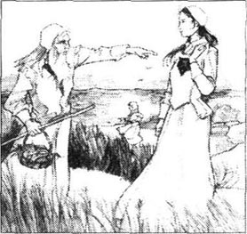
“不！”医生回答，“你还记得我九年前的样子吗，赫斯特？你可能认为我冷酷无情，可我不也曾经善良、真诚，是别人的益友吗？”
“是的。”赫斯特说，“而且还不只这些。”
“可我现在成了什么样子呢？”他问道，脸上显露出邪恶的表情。“一个恶魔！是谁把我弄成这样子的？”
“是我。”赫斯特颤抖着说，“是我，我的责任并不比他小。可你为什么不惩罚我呢？”
“你有那个红字。”他回答说，“那已经足以为我报复了。”他面带微笑，把一个指头放在红字上面。“现在，关于那个男人你还想说些什么？”
“我必须告诉他你的真面目。”赫斯特说，“他必须知道你是谁，你为什么要这么对他。我不知道结果如何。你想对他干什么就干吧。但是那样无论对他、对我、对你，或者对小珍珠都不会有任何好处。没有任何出路能帮我们脱离这种痛苦。”
罗杰·奇林沃思盯着眼前这个高挑、骄傲的女人，听出了她声音中的痛苦。他是否记起了过去对她的爱恋呢？
“我真为你难过。”他说，“你是一个好人，本该享有比我更好的人所给予的爱。”
“我也为你难过。”赫斯特回答说，“因为仇恨已经把一个明智、宽容的人变成了恶魔！重新做回人吧！原谅一切，把审判留给上帝！”
“那不可能。”老人回答说，“你种下了罪恶的种子，现在开出了黑色的花朵。我们无法改变事情发展的方向。”
他转身离去，身后的地上似乎拖着一道暗影。
赫斯特瞪着他的背影。“我恨这个人！”她喃喃自语道，“我真的希望从没嫁给过他！”她转过头寻找她的孩子。“珍珠！小珍珠！你在哪儿？”
珍珠趁母亲谈话时一直玩得挺带劲。她先是在水边上玩，接着用碎木片搭了几条小船。后来，她看到几只小鸟在海滩上吃食，就拾起几块石头向它们投去，直到一只灰色的小鸟拖着被打伤的翅膀飞走了。最后，珍珠拾了一些草，编成一个“A”字戴在胸前。
“妈妈会不会问我这是什么意思呢？”珍珠想道。
就在这时，她听到了母亲的召唤，于是像一只小海鸟似的轻盈地来到赫斯特的身旁，用手指指着自己胸前的“A”字。
“我的小珍珠，”赫斯特沉默了一会儿后说，“那绿色的字母戴在你稚气的胸口上是没有意义的。不过你知道妈妈为什么会戴上这个字母吗？”
“噢，我知道！”珍珠笑着说，“这和牧师用手捂住心口的原因一样！”
“那是什么原因呢？”赫斯特问。
“那我可就不知道了。”珍珠答道，“妈妈，这红字是什么意思？为什么你要戴在胸前？为什么牧师总是把手捂在心口上？”
赫斯特凝视着女儿的黑眼睛。她应该说什么？事情的真相吗？不！假如真相是让这个孩子懂事的全部代价，她宁可不付这个代价。
“傻珍珠！”她说道，“这个世界上有很多事是小孩子不该问的。我怎么会知道牧师心里是怎样想的呢？至于这个红字，我戴着它是因为上面的金线。”
这是赫斯特第一次为红字的事说谎，但那孩子仍不肯就此罢休。在回家的路上，她又问了两三次，吃晚饭时也问了几次，第二天早上她又问：“妈妈，妈妈，红字是什么意思？”“为什么牧师要把手捂在心口上？”
“别问了！”她母亲说，以前她从未用过这么严厉的语气跟珍珠说话。“别问了，要不我就把你关进漆黑的橱柜里去！”
A walk in the forest
7
A walk in the forest
For several days, Hester Prynne waited for a chance to speak privately with Mr Dimmesdale. She would not go to his house because she was afraid of meeting Roger Chillingworth. Then she heard that the priest had gone to visit a family a little distance away and would be returning the next afternoon, through the forest. 'Come, Pearl,' she said the next day. 'We are going for a walk in the forest.'
The trees were tall and close together, and the path through them was dark and narrow under a grey sky.
'Mother,' said little Pearl, 'the sunshine does not love you. It runs away and hides itself because it is afraid of something on your bosom. But it will not run away from me, because I do not wear anything on my bosom yet.'
'And never will, my child, I hope,' said Hester. 'Now, run away and catch the sunshine.'
Pearl ran off, and Hester smiled when she saw that her child had found a circle of sunshine between the trees. But when Hester came near to it, Pearl said, 'It will go now.'
Hester smiled. 'Look, I can put out my hand and hold some of it.' But when she put her hand into the circle, the sunshine disappeared.
They walked on. Then Hester saw someone coming and said, 'Go and play by the river, child, and leave me to speak to the gentleman who is coming.'
'Who is it?' said Pearl.
'Can't you see?' said Hester. 'It is the priest.'
'And he has his hand over his heart!' said Pearl.
'Go now, child, but not too far beyond the river.'
When Pearl had gone, Hester waited under the trees. The priest walked slowly, but he had almost gone by before Hester could find her voice.
'Arthur Dimmesdale!' she said, quietly at first, then louder. 'Arthur Dimmesdale!'
'Who speaks?' he said, turning quickly. He saw a shadow under the trees, and then he saw the scarlet letter. 'Hester! Hester Prynne! Is it you?'
'It is me,' she answered.
He touched her hand, and his touch was as cold as death. They moved back into the shadows of the trees and sat down on a fallen branch. At first they spoke of the weather, the grey sky, the coming storm, but then the priest looked into Hester's eyes.
'Have you found peace?' he said.
She smiled sadly, and looked down at her bosom. 'Have you?' she asked.
'None! Nothing but misery!' he answered. 'But what else could I expect? You wear your scarlet letter openly, on your bosom, Hester. Mine burns in secret! It is good, after these seven years, to talk to someone who knows the truth. If I had one friend—or even an enemy—whom I could talk to openly each day, then perhaps it would save me. But now it is all lies, all emptiness, all death!'
Hester Prynne looked into his face. 'You have the friend that you wish for; someone to cry with you over your sin. You have me, your partner in sin.' She hesitated, then went on, 'And you have an enemy, and you live with him in the same house.'
The priest jumped up and put his hand over his heart. 'What are you saying? An enemy!' he cried. 'In the same house? What do you mean?'
'Oh, Arthur!' she cried. 'Forgive me! In all things except one, I have been true to you. But I agreed to keep a secret. I did it to save your position, Arthur, your work as a priest, here in the town. But I cannot keep the secret any more. I must tell you. The doctor—the old man they call Roger Chillingworth—he was my husband!'
The priest stared at her for a moment—a black, violent look on his face. Then he dropped down on to his knees and buried his face in his hands.
'Why didn't I guess it?' he said quietly. 'Or perhaps I did! The horror in my heart when I first saw him, and when I see him now... Why didn't I understand? Oh, Hester Prynne, you don't know the horror and shame this news brings me! He has been secretly laughing at my sick and guilty heart. Woman, I cannot forgive you for this!'
'You will forgive me!' cried Hester. 'Let God punish me! You shall forgive me!'
She fell to her knees beside him, put her arms around him, and pulled his head against her bosom, not caring that his face rested on the scarlet letter. She could not allow him to hate her. 'For seven long years, all the world has blamed and hated me,' she thought. 'But I shall die if this weak, sinful, unhappy man hates me too.'
'Will you forgive me, Arthur?' she repeated, again and again. 'Don't hate me! Forgive me, please!'
'I forgive you, Hester,' the priest replied at last. His voice was sad, but not angry. 'May God forgive us both! We are not the worst sinners in the world. That old man's revenge has been blacker than our sin, Hester!'
'Yes!' she whispered. 'We loved one another, we told each other. Have you forgotten it?'
'Shh! Hester,' said Arthur Dimmesdale, getting up from the ground. 'No, I have not forgotten!'
They sat down on the tree branch, holding each other's hands. Around them, the trees were dark, and the branches moved noisily in the wind.
'What will Roger Chillingworth do now?' asked the priest. 'Will he continue to keep our secret?'
'He has a secret nature, and I think he will,' said Hester. 'But he will doubtless find other ways to take his revenge.'
'And me! How can I live in the same house, breathing the same air with this deadly enemy?' said Mr Dimmesdale, his hand over his heart again. 'Think for me, Hester! You are strong! Tell me what to do!'
'You must not stay with this evil man,' said Hester.
'But where can I go? I cannot hide from God,' he said.
'God will show mercy,' replied Hester, 'if you are strong enough to take advantage of it.'
'Be strong for me!' he answered. 'Advise me what to do.'
'Is the world so small, then?' said Hester, looking into his eyes. 'Is there nothing beyond this little town? Walk a few miles from here, and the yellow leaves will show no sign of a white man's feet. There you can be free! A short journey will take you from a world where you have been miserable, to one where you may still be happy! Then there is the sea. It brought you here, and if you choose, it can take you back again. Perhaps to London, or to Germany, or France, or pleasant Italy. You'll be beyond Roger Chillingworth there.'
'I can't do it!' answered the priest. 'I cannot walk away and leave my work. Although my own soul is lost, I must do what I can for the other human souls in my care.'
'After seven years of misery, you must leave it all behind you!' said Hester, with passion in her voice. 'Begin again. There is happiness to be enjoyed, there is good to be done. Change this false life for a true one! Teach, write! Work among the Indians! Do anything, except lie down and die! Why wait another day in this place? Go now!'
'Oh, Hester!' cried Arthur Dimmesdale. 'I am not strong enough, nor brave enough, to go out into the wide, strange, difficult world alone.'
Sadly, hopelessly, he repeated the word.
'Alone, Hester!'
'You shall not go alone,' she answered, her voice a deep whisper.
privately adv. with no one else present 单独；私下
violent adj. strong and difficult to control 暴躁的
continue v. to keep doing something for a longer period of time without stopping 继续
take advantage of to use a particular situation to get what you want （巧妙地）利用
false adj. completely untrue 假的；不真实的
7．林中散步
7．林中散步
几天以来，赫斯特·普林一直在等待机会想和丁梅斯代尔先生私下谈谈。她不想去他的住处，因为怕遇见罗杰·奇林沃思。不久，她听说牧师到较远的一户人家探访去了，第二天下午才能回来，回来的时候会穿过树林。“跟我来，珍珠，”她在第二天对孩子说，“我们去树林里散步吧。”
树木高而浓密，林中小径在灰色的天空下显得阴暗、狭窄。
“妈妈，”小珍珠说，“阳光并不爱你。它跑开躲起来了，因为它害怕你胸口的东西。但它不会躲着我，因为我胸前还什么都没戴呢！”
“但愿你一辈子也别戴吧，我的孩子。”赫斯特说，“现在，快跑吧，去抓住阳光！”
珍珠飞快地跑开了。赫斯特微笑着看到，她的孩子还真的在树木之间发现了一圈阳光。但是当赫斯特走近的时候，珍珠说：“这下它要走了。”
赫斯特微笑着：“看，我可以伸出手来，抓住一些阳光，”可她刚把手伸进光圈，阳光就消失了。
她们继续散步。后来，赫斯特发觉有人走过来，就说：“到河边玩去吧，孩子，让我和那边走过来的先生单独说几句话。”
“他是谁？”珍珠问。
“你没看到吗？”赫斯特说，“是牧师啊。”
“他的手还捂着心口哪！”珍珠说。
“现在就去吧，孩子，但是别离河边太远。”
珍珠走开后，赫斯特在树下等着。牧师慢慢地走过来，可他几乎都要走过去了，赫斯特还是说不出话来。
“阿瑟·丁梅斯代尔！”她开口了，起初声音很低，后来大了起来。“阿瑟·丁梅斯代尔！”
“谁在说话？”牧师应声说，他急忙转过身，看见树下有个人影，接着发现了红字。“赫斯特！赫斯特·普林！是你吗？”
“是我。”她回答道。
他碰到了她的手，他的触摸就像死亡一样冰冷。两人走回树阴下，坐在一根断落的枝干上。起初他们谈论天气，灰暗的天空，即将到来的暴风雨，接下来，牧师凝视着赫斯特的双眼。
“你得到平静了吗？”他问。
她伤感地笑了，低头望着自己的胸口。“你呢？”她问。
“没有！除了痛苦再没别的！”他回答说，“但是我还能指望什么呢？你公开地在胸口上戴着红字，赫斯特，而我的红字在私下里灼烧着！就这样过了七年之后，能和知道真相的人谈一谈真好。如果我有一个朋友——甚至是一个敌人——我可以每天和他开诚布公地谈话，也许我都可以获救呢。可是如今呢，一切全是谎言，全是空虚，全是死亡！”
赫斯特·普林凝视着他的面孔。“此时就有一个你所期望的朋友，愿意和你一起为你的罪过哭泣。有我陪着你，我们是一同犯下罪孽的人！”她迟疑了一下，但还是把话说了出来。“你也有一个敌人，就和你同住在一所房子里。”
牧师猛地站起身来，双手紧紧抓住胸口。“你说什么？一个敌人！”他叫道，“而且跟我住在一起！你是什么意思？”
“啊，阿瑟！”她叫道，“原谅我吧！我一直对你坦诚相待，可有一件事除外。我当年答应保守一个秘密，那是为了挽救你的地位。阿瑟，你是这个镇上的牧师。但是我不能再保守秘密了。我必须告诉你。那个医生——就是大家叫他罗杰·奇林沃斯的那个老人——他是我从前的丈夫！”
牧师看了她一会儿——露出一种阴郁凄厉的表情。他一下子跪在地上，用双手捂住了脸。
“我怎么就没想到呢？”他悄声说，“也许我早就知道了！从我第一眼看到他起，直到现在看他的时候，我的心都会感到恐惧……我以前怎么就没明白呢？噢，赫斯特·普林，你根本不懂这消息对我来说有多可怕，有多羞耻！他一直在暗地里嘲笑我软弱、负疚的心！女人啊，我不能原谅你！”
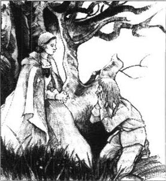
“你应当原谅我！”赫斯特叫道，“让上帝来惩罚我吧！你得原谅我！”
她跪在他身边，伸出双臂搂住了他，把他的头抱在胸前，毫不顾忌这样一来他的面颊恰好贴在那红字上。赫斯特不允许他恨她。“整整七年了，整个世界都在谴责我、痛恨我。”她想，“然而，如果这个柔弱、负疚、痛苦不堪的男人也恨我，我就去死。”
“你会原谅我吗？阿瑟？”她一遍一遍地问道，“别恨我！请原谅我！”
“我原谅你，赫斯特。”牧师终于回答了。他的声音充满悲伤，但没有愤恨。“愿上帝饶恕我们俩吧！我们并不是世上最坏的罪人。那老人的复仇比我们的罪过更见不得人，赫斯特！”
“是的！”她低声说，“我们彼此相爱，彼此倾诉过。你忘记了吗？”
“嘘！赫斯特。”阿瑟·丁梅斯代尔说，他从地上站起来。“不，我没有忘记！”
他们一起坐在树干上，互相拉着手。周围的树木朦胧一片，枝桠在风中摇曳作响。
“罗杰·奇林沃思现在会做什么呢？”牧师问道，“他还肯继续保守我们的秘密吗？”
“他天性行事诡秘，我猜他会保密的。”赫斯特说，“但是他肯定会寻找其他方式进行报复。”
“至于我！我怎能和这个致命的敌人生活在同一个屋檐下，呼吸同样的空气呢？”丁梅斯代尔先生说。他又一次捂住了心口。“为我想一想，赫斯特！你很坚强！告诉我该怎样做！”
“你一定要离开这个邪恶的人。”赫斯特说。
“但是我能去哪里呢？我不能逃避上帝的监督。”他说。
“上帝会怜悯你的，”赫斯特接口说，“只要你足够坚强，能好好利用这个机会。”
“为我坚强起来吧！”他回答说，“告诉我该怎么办。”
“难道这世界就这么狭小吗？”赫斯特注视着牧师的眼睛说，“难道世界就只有这小镇这么大吗？再走出几英里远，枯黄的落叶上便看不见白人的足迹了。到那里你就自由了！只消走过这短短的一段路，你就可以走出这万分苦恼的世界，到一个幸福的地方去！再说还有宽阔的大海，是它把你带到了这里，只要你愿意，它可以把你再送回去。不管是在伦敦、德国、法国、还是怡人的意大利，你都会逃出罗杰·奇林沃思的掌握。”
“我不能那样做！”牧师回答，“我不能丢下工作逃开。虽然我自己的灵魂已经迷失，我必须尽我所能来拯救别的灵魂！”
“你已经熬过七年的痛苦了，你应该把一切都抛下！”赫斯特说，她的声音中饱含深情。“一切从新开始！还有幸福等待你去享受！还有善举要你去做。把你虚假的生活变成真实的吧！传教，写作！就到印第安人中间去做牧师吧。你可以做任何事情，就是不要躺下死掉！你何必还要多等一天呢？立刻离开这里吧！”
“噢，赫斯特！”阿瑟·丁梅斯代尔喊道，“我已经没有那么大的力量和勇气独自到那广袤陌生的艰苦天地去闯荡了！”
他又怀着悲伤与绝望重复了一遍那个词。
“独自一人啊，赫斯特！”
“你不会独自一人前往的！”她答以一声深沉的低语。
Hope for the future
8
Hope for the future
Arthur Dimmesdale stared at Hester, with hope, joy and fear in his face. In his heart, he had thought of this too, but only Hester had been brave enough to put it into words. Suddenly, he knew that he wanted this better life that she described; and knew also that he could not live without her. 'God, will you forgive me?' he thought.
'You will go,' said Hester, calmly, as he looked at her.
And so it was decided. At once, a strange feeling of happiness came over him; something which he had thought was dead in him.
'Oh, Hester, God has been merciful!' he cried. 'This is already a better life. Why did we not find it sooner?'
'Let us not look back,' she answered. 'The past is gone! Look!' And she pulled the scarlet letter from her bosom and threw it in among the trees.
She breathed deeply. 'I did not realize how heavy it was until I was free of it!' she thought. Next, she pulled off her hat, and her hair fell down upon her shoulders, dark and rich, softening her face as it did so. She smiled, and her eyes were bright. Suddenly, she was young and beautiful again, and filled with happiness!
Another thought came into her head and she looked at him and smiled. 'You must learn to know Pearl!' she said. 'Our little Pearl. You have seen her—yes, I know you have—but you will see her now with fresh eyes. She is strange, and difficult to understand, but you will love her, and advise me what to do with her.'
'Do you think the child will be glad to know me?' asked the priest, looking worried. 'Children do not usually like me, and I have even been afraid of little Pearl.'
'That is sad,' said Hester. 'But she will love you. Let me call her. Pearl! Pearl!'
The child heard her mother's voice. She had been picking flowers and had put them in her hair and her clothes, but now she came slowly through the trees, to the other side of the little river. Very slowly—because she saw the priest.
They watched her coming.
'How strangely beautiful she looks with those flowers in her hair,' said Hester. 'She is a wonderful child! But I know whose forehead she has!'
'It is a terrible thing to say, but I have often been afraid that others would see a likeness to me in her face, and guess,' said Mr Dimmesdale. 'But she looks much more like you.'
'Do not let her see anything strange,' said Hester. 'Do not be too excited, or too loving. She will not understand. But she will love you in time.'
Pearl had stopped on the other side of the water and was looking at Hester and the priest.
'Come, dear child!' called Hester. 'How slow you are! Here is a friend of mine, who will soon be a friend of yours also. You will have twice as much love, from today. Now, hurry up!'
Pearl did not move. She looked first at her mother, with wild bright eyes, then at the priest. Then she put out a hand and pointed at her mother's bosom.
'You strange child!' said Hester. 'Why don't you come to me? Hurry, or I shall be angry with you.'
The child began to scream, still pointing her finger accusingly at her mother's bosom.
'I know what is wrong,' Hester whispered to the priest. 'She is missing something that she has always seen me wearing.'
'If you can quieten her, please do!' said Mr Dimmesdale.
Hester, her face pale again, turned to the child. 'Pearl,' she said sadly, 'look down beside your feet. There! The other side of the river.'
The child looked round and saw the scarlet letter lying at the edge of the water.
'Bring it to me,' said Hester.
'Come and fetch it!' answered Pearl.
'The child is right about the letter, of course,' Hester said to the priest. 'I must wear it for a few more days, until we have left. The forest cannot hide it, but the sea will drown it.'
She stepped forward and, picking up the scarlet letter, fastened it to her bosom again. Next, she put up her hair again, underneath her hat. A grey shadow seemed to fall across her as she did these things. She put out a hand to Pearl.
'Do you recognize your mother now, child?' she said. 'Will you come to me now?'
'Yes, now I will,' answered the child, and jumped across the water. 'Now you are my mother, and I am your little Pearl!' Gently, she pulled down her mother's head and kissed her. Then she kissed the scarlet letter, too.
'That was not kind!' said Hester. 'You show me a little love, but then you make a joke of it!'
'Why is the priest sitting over there?' asked Pearl.
'He is waiting to welcome you,' said Hester. 'He loves you, my little Pearl, and he loves your mother, too. Come! Will you not love him?'
'Does he love us?' said Pearl, looking closely at her mother's face. 'Will he go back with us, hand in hand, the three of us together, into the town?'
'Not now, dear child,' said Hester. 'But soon he will walk hand in hand with us. We will have a home of our own, and you will sit on his knee and he will teach you many things, and love you dearly. You will love him—won't you?'
'And will he always keep his hand over his heart?' asked Pearl.
'Silly child! What kind of question is that?' said Hester. 'Come, and be nice to him.'
But Pearl made an ugly face and tried to pull away from her mother. And when Mr Dimmesdale kissed her gently on the forehead, she ran down to the river and washed her face, again and again, until the unwelcome kiss was washed away. Then she watched silently as her mother and the priest talked quietly, making arrangements for their new life together.
The plan was soon made. It was decided between them that the Old World, with its crowds and cities, would offer them a better chance of living quietly and privately. And luckily, Hester knew of a ship which had recently arrived from Spain and would soon leave again to sail to Bristol, in England.
'I know the captain,' she said, 'and I can secretly arrange for you, me and little Pearl to sail with him to England.'
'When does the ship leave?' asked Mr Dimmesdale.
'Probably four days from today,' replied Hester.
* * *
As he hurried back to the town, leaving Hester and Pearl to return to their cottage, Mr Dimmesdale thought about the plan. 'Four days' time is just right. Three days from today I have to give my Election Sermon, and it will be a most suitable way to end my time here as a priest. At least they will not be able to say that I left without doing my job until the very end!'
He became more and more excited as he made his way back into the town. In this new, happier mood, everything looked and seemed different, even the people he met or passed in the street. He wanted to say to them, 'I am not the man you think I am! I left him behind in the forest!'
Then he passed Mistress Hibbins, the Governor's sister, who, unusually, stopped to speak to him.
'So, Mr Dimmesdale,' she said, 'you have been walking in the forest! You must tell me next time you plan to go. I will come with you, and we can meet our Master.' And she passed on by, giving the priest a secret little smile.
'Why does she talk to me like this?' he thought nervously. 'Does she see the black mark of the Devil in my soul?'
He was glad to reach his house, and hurried upstairs to his study. Here were his books, the window, the fireplace. Here, he had written and studied and prayed. There on the table, with his pen beside it, was the half-finished Election Sermon, which he had left behind two days ago. Now, he saw all these things differently, through the eyes of another man—a wiser man, who had returned out of the forest.
At that moment, there was a knock at his door. 'Come in!' cried Mr Dimmesdale, wondering if a devil would enter. Then old Roger Chillingworth came in, and the priest stood, unable to speak, with his hand over his heart.
'Welcome home, sir,' said the doctor, smiling. 'How was your journey through the forest? You look pale! I think you will need my help if you are going to be able to give your Election Sermon in a day or two. Don't you think so?'
'No—not at all,' replied Mr Dimmesdale. 'The long walk in the fresh air has been good for me, after spending so much time in my study. Thank you, but I do not think I need any more of your medicine, my kind doctor.'
Did Roger Chillingworth know, the priest wondered, that he had met and talked with Hester Prynne? Did he know that in the priest's eyes he was now a hated enemy? Perhaps the friendly words from the doctor to his patient now had double meanings.
'But, my dear sir, we must do whatever we can to make you strong and well,' said Chillingworth. 'The people expect great things from you, and are afraid that in another year you may be gone.'
'Yes, gone to another world,' replied the priest, sadly. 'And may God make it a better one, because I don't expect to be with my people for another year. But, thank you, sir, I do not need your medicine at the moment.'
'I am glad to hear it,' said Chillingworth.
'I thank you from my heart, most watchful friend,' said the priest. 'I can only repay your kindness with my prayers.'
'A good man's prayers are like gold!' answered Roger Chillingworth, as he went out of the room.
After he had gone, Mr Dimmesdale threw away his half-written Election Sermon and sat down to begin it again. All through that night he wrote—and the words seemed to come from God.
realize v. to start to know something that you had not noticed before 发现；意识到
in time sooner or later 迟早
fetch v. bring back 拿来
drown v. to sink under water 淹没
sermon n. a religious talk given as part of a Christian church service, usually based on a part of the Bible （基督教的）布道；讲道
double adj. combining two different qualities 双重的
希望
8．希望
阿瑟·丁梅斯代尔凝视着赫斯特，脸上闪烁着希望和欣喜，但也夹杂着畏缩。他心里也有过这种想法，但是只有赫斯特有勇气将它说出来。突然之间，他意识到他是想去过她描述的那种美好生活的；也同样明白了自己不能没有她。“上帝啊，你能宽恕我吗？”他暗想。
“你就走吧！”赫斯特说，安详地面对着他的注视。
事情就这么决定了。刹那间，一种异常的幸福感笼罩了他，他曾以为这种情感早与他绝缘了。
“哦，赫斯特，上帝已经很仁慈了！”他喊道，“这已经是一种更好的生活了。为什么我们没有早一点想到呢？”
“我们不要回头看了。”她回答道，“过去的都过去了！看！”她把红字从胸前扯下来，抛到了树丛中。
她深深吸一口气。“直到摆脱它我才明白它有多沉重！”她想。接着她摘下了帽子，满头乌黑浓密的秀发披散到了肩膀上，使她的容貌又像过去一样柔和了。她笑了，眼睛放着光彩。突然之间，她恢复了年轻和美丽，全身洋溢着幸福！
她想到另外一件事，看着牧师笑了。“你应该认识认识珍珠！”她说，“我们的小珍珠！你已经见过她了——是啊，我知道的——但现在你要用全新的眼光来看她。她有点儿古怪，不太好理解，但你会爱她的，还要给我出出主意怎么对付她。”
“你觉得孩子会高兴认识我吗？”牧师有点儿不安地问，“小孩子常常都不太喜欢我，我甚至一直害怕小珍珠。”
“那可不太好。”赫斯特回答说，“但是她会爱你的。我把她叫来。珍珠！珍珠！”
孩子听到了母亲的呼唤。她一直在采花，把花插在头发上和衣服上，她慢慢地穿过树林向小河的另一边走来。她走得很慢——因为看到了牧师。
他们看着她走过来。
“她头上戴着那些花，真是漂亮得出奇。”赫斯特说，“她是一个奇妙的孩子！但我知道她的额头像谁！”
“说这个真可怕，我常常担心人们会认出来她长得像我，然后猜出什么来。”丁梅斯代尔先生说，“不过她还是更像你！”
“别让她看出什么不同寻常的地方。”赫斯特说，“既不要太激动，也不要太热情。她不会理解的，但是她会爱你的！”
这时珍珠已经停在小河对岸，瞅着赫斯特和牧师。
“过来，宝贝儿！”赫斯特呼唤着，“你走得真慢！这是我的一个朋友，他很快也会是你的朋友了。从今以后，你要得到双倍的爱了！快到我们这儿来！”
珍珠仍然没动。她那对野性、明亮的眼睛先看看母亲，然后又看看牧师。接着她伸出手，指着母亲的胸口。
“你这个怪孩子！”赫斯特说道，“为什么不到我身边来呢？快点儿，否则我要生气了。”
孩子尖叫起来，手指仍然责备般地指向母亲的胸前。
“我知道哪里不对劲了。”赫斯特对牧师低声说，“她还想着那个我一直戴着的东西。”
“如果你能让她安静下来的话，请快点儿吧！”丁梅斯代尔先生说。
赫斯特的脸又变得苍白了，她转身对着孩子。“珍珠，”她伤心地说，“往你脚下瞧。就在那儿！在河这边的岸上。”
那孩子四下环顾，看到红字就在那里，紧挨水边。
“把它拣回来！”赫斯特说。
“你过来拾吧！”珍珠回答道。
“她对这标记的看法是没错的。”赫斯特对牧师说道，“我还得再戴些日子，直到我们离开这块地方。这片森林还藏不住它，但大海可以把它吞没。”
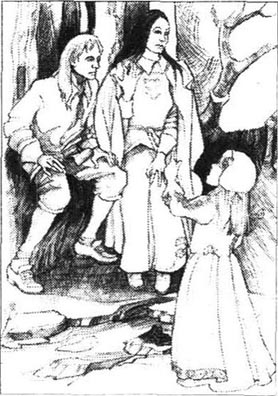
她上前把红字拣起来，重新别在胸前，接下来重新挽起了头发，戴上帽子。当她做这些事情时，似乎有一道灰色的阴影笼罩了她。她向珍珠伸出手去。
“现在你认得妈妈了吗，孩子？”她问，“现在你愿意到我这儿来吗？”
“是啊，现在我愿意了！”孩子回答，她跳过小溪。“这样你才是我妈妈了！我也是你的小珍珠了！”她温柔地扳过母亲的额头亲了一下，接着又把那红字吻了一下。
“这可不好！”赫斯特说，“你刚对我表示出一点点爱，然后却要嘲弄我！”
“牧师干嘛坐在那儿？”珍珠问。
“他等着欢迎你呢。”赫斯特回答，“他爱你，我的小珍珠，而且也爱妈妈。来啊！你会爱他吗？”
“他爱我们吗？”珍珠说着，抬起眼睛瞅着母亲的面孔。“他会跟我们手拉着手，三个人一起回镇上去吗？”
“这会儿还不成，我的乖孩子。”赫斯特回答说，“但是很快他就会跟我们手拉着手一起走的。我们会有一个自己的家，你会坐在他的膝头；而他会教给你许多事情，深深地爱你。你也会爱他的，不是吗？”
“他还会一直用手捂着心口吗？”珍珠问道。
“傻孩子！这算什么问题？”赫斯特说，“过来对他表示一下友好吧！”
但珍珠做了个怪脸，极力想从母亲的手里挣脱开。牧师在她的额头上温柔地亲了一下。可珍珠立刻跑到小河边上，一遍又一遍地洗起脸来，直到把那个不受欢迎的吻给完全洗净。然后她便默默地望着赫斯特和牧师小声交谈，他们正为新生活做出种种安排。
计划很快就定好了。他们一致认为旧大陆人烟稠密、城市林立，能为他们隐秘安静的生活提供更好的机会。幸运的是，赫斯特刚好知道最近有一艘船从西班牙开来，不久就会驶往英国的布里斯托尔。
“我认识这个船长。”她说，“我可以秘密地安排你、我和小珍珠一起坐船去英格兰。”
“船什么时候离开？”丁梅斯代尔先生问。
“可能在四天后。”赫斯特回答。
* * *
丁梅斯代尔先生匆忙地赶回城里，赫斯特和珍珠则返回她们的小茅屋。他一路考虑着这个计划。“四天时间刚刚好。因为在三天后，我要在庆祝选举的布道会上宣教，这也是我结束牧师生涯的最好方式。至少，他们不能说我没有恪尽职守到最后一刻！”
在返回城镇的路上，他变得越来越激动。在这种新奇的幸福感中，他看到的每样东西、甚至在街上遇到或擦肩而过的人都和原来不一样了。他想对他们说：“我不是你们想象的那个人！我已经把那个人留在树林中了。”
接着他遇到了总督的姐姐希宾斯太太。她一反常态地拦住他说话。
“啊，丁梅斯代尔先生，”她说，“您去树林里散步了！您下次去的时候，请务必跟我打个招呼，我陪您去。我们会见到主人！”她说着就走过去了，留给牧师一个诡异的笑容。
“她为什么这样对我说话？”他紧张地想。“难道她看见了魔鬼在我灵魂上留下的黑暗印记？”
回到住所，他松了一口气，赶忙上楼躲进书房。这儿有他的书籍、窗子、壁炉。他曾在这里写作、研读和祈祷。在桌上他的笔旁，摆着那篇尚未完成的布道词，那是两天前留下的。现在他看到的这一切都不同了，因为那是来自另外一个人的眼光——一个刚从树林中返回的更明智的人。
就在这个时候，传来一记敲门声。牧师大声道：“请进！”思忖着是不是来了恶魔。进来的正是老罗杰·奇林沃思。牧师站在那里说不出话来，一只手捂住了心口。
“欢迎你回来，先生。”医生笑着说，“这次穿越树林的旅行怎么样？你看上去脸色苍白！一两天后就要举行选举的布道呢，我觉得你需要我帮忙。你不这样想吗？”
“不，完全不必了。”丁梅斯代尔先生接口说，“我在书房里闷了太久，在新鲜空气中多走走对我大有好处，谢谢，可我想我已经不需要你的药了，好心的医生。”
牧师思忖着罗杰·奇林沃思是否知道自己同赫斯特·普林已经见面谈过了。他知道在牧师的心目中他已经成了恶毒的敌人了吗？也许现在医生对这个病人所说的友好的话都有双重含义。
“但是，我亲爱的先生，我们必须竭尽所能使你身强力壮。”奇林沃思说，“人们对你的期望很大呢，担心明年一到，他们的牧师就会不在了。”
“是啊，到另一个世界去。”牧师带着悲伤回答说，“但愿上帝保佑，那是个更好的世界，因为，我觉得我没法跟教众们一起度过下一年了！不过，谢谢你，先生，我现在不需要你的药。”
“很高兴听你这么说。”奇林沃思说。
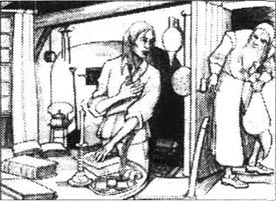
“我由衷地感激你，我最尽心的朋友。”牧师说，“我只有用祈祷来报答你的善意。”
“好人的祈祷如同黄金！”罗杰·奇林沃思一边说着，一边退出了房间。
当他走后，牧师就把尚未完成的选举布道词扔到一边，坐下又重新写了起来。他彻夜直书——有如神助。
9．Escape
9
Escape
On the morning of Election Day, when the townspeople came together to meet their newly elected Governor, Hester Prynne came into the market-place in her usual dress of grey cloth, with the scarlet letter on her bosom. The quiet, sad look on her face hid the excitement deep inside her. Who in the crowd could guess her thoughts that day?
Look for the last time at the scarlet letter and its wearer! In a little while I will be beyond your reach! I will be free, and the scarlet letter of shame, which has burned on my bosom for seven long years, will lie for ever at the bottom of the sea!
Little Pearl, sensitive to her mother's excitement without knowing the reason for it, was dancing along at Hester's side, singing or giving happy little shouts.
'Why are the people not working today, Mother?' she asked, when she saw the crowd in the market-place. 'And look how many strangers there are here today—Indians and sailors among them. What is everyone waiting for?'
'They are waiting to see the new Governor go past,' answered Hester. 'And the magistrates and the priests, and all the great and good people, with the soldiers marching in front of them to the music.'
'Will Mr Dimmesdale be there?' asked Pearl. 'Will he hold out both his hands to me, as he did that day in the forest?'
'He will be there, child,' said Hester. 'But he will not speak to you today, and you must not speak to him.'
'What a strange, sad man he is,' said the child. 'He held your hand and mine at night on the scaffold, and again in the forest. But here on this sunny day, among all the people, he does not know us, and we must not speak to him. What a strange, sad man, with his hand always over his heart.'
'Be quiet, Pearl!' said Hester. 'You don't understand these things. Don't think about the priest. Look around, and see how happy everyone is today, on this holiday.'
And it was true. Most people were smiling, and there was a lot of talk and laughter. The sailors from the Spanish ship, with their sunburnt faces and long beards, were noisier than most. They shouted and laughed, and drank wine from bottles. Sailors in those days obeyed only the laws of the sea, and were allowed to do much as they liked on land. Even the Puritans smiled at their noisy ways.
So it was no surprise to anyone to see a respectable man like old Roger Chillingworth come into the market-place, speaking with the captain of the ship.
Moments later, when the two men went their separate ways, the captain walked across to Hester Prynne. As usual, people avoided standing near her, which meant that she and the captain could talk privately.
'So, mistress,' said the captain, 'another one to join you! And with two doctors—our own ship's doctor and this other doctor—we need not fear ship-fever on this voyage!'
'What do you mean?' said Hester, alarmed. 'You have another passenger?'
'Didn't you know that this doctor—Chillingworth, he calls himself—has decided to travel with you?' said the captain. 'Oh, but you must know! He told me he's a good friend of the gentleman you spoke about.'
'They—they know each other well,' agreed Hester, trying desperately to look calm. 'They live in the same house.'
No more words were spoken between them, but at that moment she saw old Roger Chillingworth, standing in a far corner of the market-place. He was smiling at her—a smile which, even across the wide and busy square, carried secret and fearful meaning.
Before she could think clearly again, there was the sound of music, and a moment later she saw the band coming, followed by soldiers. Little Pearl laughed and jumped up and down excitedly. Next came the magistrates, and then the priests. Mr Dimmesdale was among them, but although his feet marched with the music, it is doubtful whether he actually heard it, as he seemed to be deep in thought.
Hester watched him, and her heart was heavy. Was this the same man who had sat with her in the forest, holding her hand? He looked so different now, walking proudly, with his head held high, and without a single look at her.
'It was a dream,' she thought. 'There can be no real love between us. How can there be? A man in his position.'
Pearl noticed the sadness which had suddenly come over her mother, and became worried and uncomfortable. When the priests had gone by, she looked into her mother's face and said, 'Is that the same priest who kissed me in the forest?'
'Be quiet, little Pearl!' whispered her mother. 'We must not talk in the market-place about the things that happen to us in the forest!'
Then she heard her name spoken, and turned to see Mistress Hibbins behind her.
'Now, who would believe it?' the old lady whispered to Hester. 'Look at our priest, Mr Dimmesdale! He looks so godly today! And only a little while since he went from his study to walk in the forest! Ah! And we know what that means, Hester Prynne! Can you be sure, Hester, that he is the same man that you met among the trees?'
'Mistress Hibbins, I don't know what you are talking about,' said Hester. Was the old woman as mad as she seemed? Did she really dance in the forest with the Evil One, the Devil himself?
'Come, come, Hester! The Dark One knows those who have signed their names in his book!' And laughing crazily, Mistress Hibbins walked on.
By this time, the first prayers had been said in the church meeting-house, and Hester could hear Mr Dimmesdale beginning his sermon. She stood close to the scaffold platform where she could hear most of his words.
His voice was strong and clear and sweet. Sometimes he spoke quietly, and at other times with great passion. But Hester, who knew the guilt and misery in his heart, could hear in his voice a cry of pain. A cry from the very soul of the man! She listened, unable to move from the scaffold, that place of public shame which she knew so well.
Little Pearl, meanwhile, had moved away and was playing and dancing about in the market-place. Whenever she saw something which interested her, she ran across to it. She ran to stare at a group of Indians, then ran into the centre of a group of sailors, who laughed and tried to join in her game, but she would not let them.
The captain tried to kiss her, but she danced away. Then he called to her.
'Your mother is the woman with the scarlet letter, isn't she?' he said. 'Will you give her a message? Tell her that I spoke with the old doctor, and he will bring the other gentleman to the ship with him. She need only take herself and you. Will you tell her that?'
Pearl ran through the crowd to her mother, and repeated the captain's words. Hester listened with a growing misery. The plan for herself and the priest now seemed hopeless.
And even as she suffered this great disappointment, a crowd was coming together around Hester, mostly people from the countryside who had heard about but not seen 'the woman with the scarlet letter' and wanted to stare at her. The Indians, too, came to look.
And while Hester stood in the centre of that circle of shame, Mr Arthur Dimmesdale stood in the church and received the love and respect of all who listened to him.
When he finished his sermon, there was silence inside the meeting-house. A minute later, the crowd began to leave the church, all talking at once. How beautifully their good Mr Dimmesdale had spoken, they said! What a wise and godly man he was!
There was a sadness too, not in the words themselves but in the way he spoke them. A sadness of someone who is about to die. Yes, their priest, whom they loved, and who loved them, had the sound of a man who would not be in this world for much longer.
And Mr Dimmesdale? It was his proudest moment.
Now the band began to play again, and the soldiers got ready to lead everyone to the town hall. The people stepped back to make room for the Governor, the magistrates, the officers of the town, and the priests. They shouted and waved, but the noise began to die away as the crowd saw their young priest, Mr Dimmesdale.
How weak and pale he looked, suddenly! Where was the proud man who had marched to the church earlier; the man who had spoken with such passion in the meeting-house? His face was the face of a man already half-dead.
One of the other priests, old Mr Wilson, stepped forward to offer his help, but Mr Dimmesdale waved him away. They were near the scaffold now, and there stood Hester Prynne, holding little Pearl's hand. And there was the scarlet letter on her bosom. Arthur Dimmesdale stopped, unable to go on. And then he turned to the scaffold and held out his arms.
'Hester,' he said, 'come here! Come, my little Pearl!'
His face had the look of a man, both sad and joyful, who has finally won a battle inside himself.
The child ran to him and threw her arms around his knees. Hester Prynne, moving slowly like a woman in a dream, also came near, but paused before she reached him. At that moment, Roger Chillingworth pushed through the crowd and caught hold of the priest's arm.
'Stop!' he whispered to Mr Dimmesdale. 'What are you doing? Wave back that woman! Push away that child! All will be well. Do not do this! I can still save you!'
'You are too late!' answered the priest. 'With God's help, I shall escape you now!' He put out his hand to Hester.
'Hester Prynne! God has made me strong enough, at this last moment, to do the thing that I failed to do seven years ago. Come now, and be strong with me. Come and stand with me on the scaffold!'
There was great excitement in the crowd, but the priests and magistrates could not believe what they were seeing, and they remained silent. They saw the young priest with Hester's arm around him, and his hand holding little Pearl's hand. The three of them climbed the steps of the scaffold, and were followed by old Roger Chillingworth.
'Is this the only place that you could find to escape from me?' whispered Chillingworth. 'The scaffold!'
'It is God who led me here!' said Mr Dimmesdale, 'and I thank Him for it.' But he trembled as he turned to Hester. 'Is this not better than what we planned in the forest?'
'I don't know!' she replied hurriedly. 'Better? We may both die, and little Pearl may die with us!'
'God will decide, but He is merciful,' said the priest. 'Let me do now what God has told me to do. I am a dying man, Hester. Let me accept my shame before I die.'
He turned and looked down at the crowd.
'People of New England!' he cried. 'You who have loved me! Look at me now, as I stand here with this woman. For seven long years you have called her a sinner and hated her. You have seen the scarlet letter on her bosom, and have crossed the street to avoid her. But there has been someone living among you whose sin and shame you have not known!' He stepped forward, away from Hester and the child. 'God knew him! The Devil knew him! And now, at the hour of his death, you shall know him! He stands in front of you! Look again at Hester's scarlet letter. With all its mysterious horror, it is only a shadow of what is on my own bosom! Look! Look! See for yourselves!'
And he pulled open his shirt for them to see his chest!
Cries of horror came from the crowd. For a moment, the priest stood proudly—a man who has won a battle over his own pain and fear. Then he fell to the ground.
Hester lifted him, and held his head against her bosom. Chillingworth knelt down beside him, an empty, dull look on his face.
'You have escaped me!' Chillingworth repeated again and again. 'You have escaped me!'
'May God forgive you,' the young priest said to him. 'You, too, have sinned deeply.' He turned his dying eyes towards Hester and the child. 'My little Pearl!' he said, his voice almost a whisper. 'Will you kiss me now?'
Pearl kissed him, and her tears fell on her father's face.
'Hester!' said the priest. 'Goodbye!'
'Won't we meet again?' she whispered, her face close to his. 'Won't we meet in heaven, and be together for ever?'
'Hester, Hester, I don't know,' he said. 'But God is merciful! He has proved his mercy. He gave me this burning pain to suffer on my bosom! He sent me that dark and terrible old man, to keep the pain always red-hot! He has brought me here, to die a death of shame, in front of the people! Without all this, I would be lost for ever! For this I thank Him. I thank God! Goodbye...!'
The final word came with the priest's dying breath.
sensitive adj. able to understand other people's feelings and problems 能理解（别人的感情和问题）的
sunburnt adj. having skin that is red and painful, as a result of spending too much time in the sun 晒伤的
desperately adv. very much 非常地
come over if a strong feeling comes over some one, they suddenly experience it 突然感觉……
meeting-house n. a building where you worship 聚会所
make room for make space for 腾出地方
die away if a sound dies away, it becomes gradually weaker and finally stops （声音）慢慢变弱，逐渐消失
dull adj. not bright 暗淡的
逃亡
9．逃亡
选举日那天早晨，当镇上的居民都聚集起来，迎接新当选的总督时，赫斯特·普林也来到市场。和往常一样，她仍然穿着那身灰色的衣服，胸前戴着红字。她脸上那种平静而忧伤的表情深深隐藏了心底里的激动。熙熙攘攘的人群中，又有谁知道她的想法呢？
最后看一眼这红字和佩戴红字的人吧！再过一小会儿，我就会远走高飞了！我要自由了，这个在我胸前灼烧了七年的代表耻辱的红字，将永远埋葬在海底。
小珍珠敏感地觉察到母亲的兴奋，尽管她并不知道原因。她在母亲身旁边跳边唱，快乐地轻声叫喊着。
“为什么今天每个人都不干活儿了呢，妈妈？”当她看到聚集在市场上的人群时，这样问道，“看，今天在这儿有很多陌生人，其中还有印第安人和水手。大家都在等谁呢？”
“他们在等新任的总督经过。”赫斯特说，“官员和牧师们也要从这里走过去，还有所有的大人物和好心人，前面要有士兵踩着音乐的拍子开路呢。”
“丁梅斯代尔先生会来吗？”珍珠问，“他会朝我伸出双手，就像那天在树林里那样吗？”
“他会来的，孩子。”她母亲回答，“但是他今天不会跟你说话，你也不能招呼他。”
“他真是个忧伤的怪人！”孩子说，“那天夜里，他握住你和我的手，一起站在绞刑台上。在树林里，他也这样做了。可是今天阳光这么明媚，又有这么多人，他却不认识我们，我们也不能和他说话！他真是个忧伤的怪人，总是用手捂着心口！”
“别作声，珍珠！”赫斯特说，“你不明白这些事情。别想着牧师了，往周围看看吧，看看大伙在今天这个节日有多高兴。”
赫斯特说的不错。多数人脸上都带着笑意，四周都是聊天声和笑声。从西班牙的船上下来的水手闹得最欢，他们的脸都被太阳晒伤了，胡子老长。他们又叫又笑，拿着酒瓶子喝酒。那个时代的水手只遵循海上的法令，一旦上了陆地，就可以为所欲为。甚至连清教徒都对他们这种闹哄哄的方式表示宽容。
所以，当人们看到老罗杰·奇林沃思这样一位可敬的人走进市场，和那艘船的船长交谈时，也并不感到惊讶。
一会儿工夫，二人各自走开了。船长踱过市场，来到赫斯特·普林站的地方。和往常一样，人们避免离赫斯特太近，所以赫斯特能够同船长私下里交谈。
“是这样，女士，”船长说，“还有一个人要加入你们！有了两位医生——我们自己船上的医生和这位医生——在这次航行中，我们不必担心会发生船热病了。”
“你是什么意思？”赫斯特警惕地问，“你还有一位乘客？”
“怎么，你还不知道？那位医生——他说他叫奇林沃思——打算和你们一起走。”船长说，“你肯定知道的吧！因为他告诉我，他还是你提到的那位先生的密友呢。”
“他们——彼此是很熟悉。”赫斯特尽量不动声色地回答说，“他们住在同一所房子中。”
船长和赫斯特·普林没有再说什么。但就在此时，她注意到老罗杰·奇林沃思正站在市场远远的一个角落里朝她微笑。虽然隔着宽阔喧闹的广场，那笑容竟也透出诡秘而可怕的含义。
赫斯特·普林还没来得及好好想想，一阵音乐声就传了过来。过了一会儿，她看到乐队走过来，士兵们紧随其后。小珍珠笑着，兴奋地跳上跳下。紧随卫队而来的是官员们，然后是牧师们。丁梅斯代尔先生就在他们当中。虽然他的脚步随着音乐在前进，但他是否真的听到了那音乐声却值得怀疑，因为他似乎是在沉思。
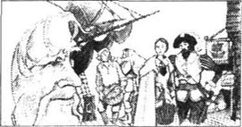
赫斯特看着她，心情十分沉重。这就是那个和她一起坐在树林中，握住她的手的那个男人吗？他现在好像变了一个人，高昂着头，骄傲地走着，看都没看她一眼。
“那是一个梦吧。”她想，“我们之间不可能有真爱。怎么可能会有呢？和一个处在他那种地位的人。”
珍珠注意到母亲突然悲伤起来，于是也变得忧虑不安了。当牧师走过她们身边的时候，她望着母亲的脸问：“这就是那个在树林里亲我的牧师吗？”
“别出声，小珍珠！”她母亲悄悄说，“我们在市场这儿可不准谈起树林里的事。”
接着她听到有人叫她的名字。转头一看，是希宾斯太太在她身后。
“现在，谁会相信？”那个老女人对赫斯特低声说，“看看我们的牧师，丁梅斯代尔先生！今天他看上去多么神圣啊！就在不久之前，他还走出书房，到树林里去散步呢！啊！我们清楚那意味着什么，赫斯特·普林！不过，赫斯特，你能确定他就是你在树林里遇到的那个人么？”
“希宾斯太太，我不明白你在说什么。”赫斯特说，这个老女人真像看上去那样疯癫吗？她真的曾在树林中和那个邪恶的家伙，也就是魔鬼共舞吗？
“行了，行了，赫斯特！魔鬼知道谁在他的册子上签了名！”希宾斯太太狂笑着走开了。
此时，教堂聚会所中已经做完场前祈祷，赫斯特听到丁梅斯代尔先生开始布道了。她紧靠绞刑台站定，这里几乎能听到他说的每个字。
他洪亮的声音清晰甜美，时而平静，时而饱含激情。但是赫斯特了解他心中的负疚与痛苦，因而可以听出他声音中痛苦的呼号。那是这个男人灵魂深处的呼号！她倾听着，无法从绞刑台旁边移开——这个令人当众受辱的地方她再熟悉不过了。
与此同时，小珍珠早已跑开了，在市场里四处玩耍。不论看到什么有趣的东西，她都会跑过去。她跑去盯着一群印第安人看，又跑到水手们当中，但当他们笑着想和她一起玩的时候，她却不让了。
船长想亲她一下，她却跑开了。于是船长对她喊道：
“你妈妈就是那个戴着红字的女人，是不是？”他说，“你给她带个信儿吧？告诉她我和那个老医生说好了，他会带另外那位先生跟他一起上船。你妈妈只要带着你来就行了。你能转告她吗？”
珍珠跑着穿过人群去找母亲，向她重复了船长的话。赫斯特听着，心头越发沉重起来。现在看来她和牧师的计划无望实现了。
她正承受着巨大的失望时，一群人向她围了过来，大都是从附近乡下来的人。他们早就听说过“戴着红字的女人”，但没见过，都想亲眼看看。连那些印第安人也都围过来看。
就在赫斯特站在那耻辱的包围圈中时，阿瑟·丁梅斯代尔先生正站在教堂里，接受听众的爱戴与崇拜。
当他结束布道的时候，聚会所里一片肃然。片刻过后，人们走出教堂，马上开始谈论起来。丁梅斯代尔先生讲得多好啊！他是多么睿智、多么神圣啊！
他的布道带着一种哀伤——不在他的词句当中，而是在他讲话的方式里——那是一种人之将死的哀伤。是啊，受到他们爱戴、也同样爱着他们的牧师，听起来仿佛行将离世。
而丁梅斯代尔先生呢？这是他一生中最自豪的时刻。
这时乐队又开始演奏了。士兵们准备带领所有人走到市政厅。人群纷纷后退，给总督、治安官、镇上的其他官员还有牧师们让出地方。人们欢呼着，挥着手。但是看到年轻的牧师丁梅斯代尔先生时，他们的声音渐渐静了下来。
突然之间，他看上去是那么虚弱、那么苍白！刚才那个自豪地走向教堂的人哪里去了？那个热情洋溢地在聚会所布道的人哪里去了？他看起来就像一个垂死的人。
另一位牧师，年长的威尔逊先生迈步上前，要来搀扶他。丁梅斯代尔先生却挥手叫他走开。他们现在到了绞刑台附近，赫斯特就站在那儿，拉着小珍珠的手！而红字就在她胸前！阿瑟·丁梅斯代尔走到这里停下了脚步，再也不能前进了。他转过身面对着绞刑台，伸出了双臂。
“赫斯特，”他说，“到这里来！过来，我的小珍珠！”
他的脸上的神情悲喜交集，那是终于战胜了自己的神情。
那孩子朝他跑去，伸出双臂搂住了他的双膝。赫斯特·普林像梦游一样，也缓缓向前走去，只是没到他的身边就站住了。就在此刻，罗杰·奇林沃思从人群中挤出来，一把抓住了牧师的胳臂。
“别这样！”他低声对丁梅斯代尔先生说，“你在干什么？让那女人回去！把孩子推开！一切都会没事的！别这么做！我还能拯救你！”
“你来得太迟了！”牧师回答说，“有了上帝的帮助，我现在要逃脱你了！”他向赫斯特伸出了手。
“赫斯特·普林！上帝让我在这最后的时刻变得坚强，让我来完成七年前没能做的事情。现在过来吧，和我一起坚强面对吧。来，和我一起站到这绞刑台上！”
人群一片哗然。可是牧师们和官员们无法相信眼前所见的，只好保持沉默。他们看到赫斯特用手臂挽着年轻的牧师，他的手紧握着珍珠的小手，三个人一起登上了绞刑台。老罗杰·奇林沃思紧随在后。
“这是你能找到的唯一一处可以摆脱我的地方吗？”奇林沃思低声道，“就是这座绞刑台！”
“是上帝引领我到这里来的！”丁梅斯代尔先生说，“我为此感谢上帝。”然而他转身面对赫斯特时发抖了。“这样做不是比我们在树林中计划的更好吗？”
“我不知道！”她急切地回答，“会更好吗？我们俩也许都会死，还有小珍珠陪葬！”
“上帝会判定一切，而上帝是仁慈的！”牧师说，“让我按上帝的指示去做吧。我已经是个垂死的人了。赫斯特，那就让我在临死前承担起我的耻辱吧！”
他转过身俯看人群。
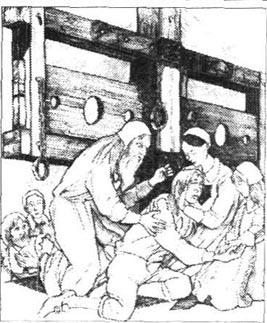
“新英格兰的人们！”他喊道，“你们一直热爱着我！现在请看着我，我和这个女人一起站在这里。在过去漫长的七年里，你们称她为罪人，并且憎恨她。你们看到她胸前的红字，也曾穿过街道躲避她。但是就在你们中间，却有一个人，他的罪孽和耻辱却不为你们所知！”他向前迈了一步，离开了母女二人。“可上帝知道他的所做所为，魔鬼也知道！如今，在他濒死之际，你们也应该知道他是谁！他就站在你们面前！你们再看看赫斯特的红字，它虽然神秘、可怕，但只不过是我胸前这东西的影子而已，看吧！看吧！你们自己看看吧！”
他猛地扯开衬衣，向人们露出胸膛。
人群中发出惊恐的叫声。这一刻，牧师自豪地站在那里——就像一个终于战胜了痛苦与恐惧的人。随后，他就瘫倒在了地上！
赫斯特托起他，让他的头靠在自己胸前。奇林沃思跪在他身旁，表情空洞呆滞。
“你总算逃脱了我！”奇林沃思一再地重复说，“你总算逃脱了我！”
“愿上帝饶恕你吧！”牧师说，“你，同样罪孽深重！”他将失神的目光转向赫斯特和孩子。“我的小珍珠，”他的声音低得如同耳语一般，“你现在愿意亲吻我吗？”
珍珠亲吻了他，她的泪珠滑落在父亲的脸上。
“赫斯特！”牧师说，“别了！”
“我们难道不能再相会了吗？”她把脸贴近他的脸悄声说，“我们难道不能在天堂相聚吗？永远地在一起？”
“赫斯特，赫斯特，我不知道。”他说，“但上帝是仁慈的！他证明了他的仁慈。他给了我胸前这灼烧的痛楚！他派来那个阴森可怖的老人，使那痛楚灼烧不停！他把我带到这里，让我在众人面前，死在耻辱之中！如果没有这些，我就要永世沉沦了！为此我感激他，我感激上帝！别了！”
说完这最后一句话，牧师也停止了呼吸。
10．Hester Prynne's sadness
10
Hester Prynne's sadness
After many days, when there had been time for people to arrange their thoughts, there was more than one report about what had been seen on the scaffold.
Most of those watching said that they saw a scarlet letter, like Hester Prynne's, on the priest's chest. But how long had it been there? There were various explanations, all of which were no more than guesses. Some said that Mr Dimmesdale had burned the letter into his chest on the same day that Hester Prynne received her scarlet letter. Others said that old Roger Chillingworth had caused it to appear, by some devilish magic. And others said it was a terrible sign of a guilty heart, and of God's punishment. The reader may choose from these possible explanations.
However, there were some who were watching who said that there was no mark at all on Mr Dimmesdale's chest. Neither, they said, had his dying words accepted any part of, or responsibility for, Hester Prynne's shame. The priest, they said, by choosing to die in the arms of that sinful woman, was simply trying to teach his people that even the most godly of them were all sinners in the eyes of God.
But nothing was more extraordinary than the way old Roger Chillingworth changed after Mr Dimmesdale's death. This unhappy man grew weaker every day. Revenge had been his food and drink, and without it, his life had no meaning. Before the end of a year, he was dead.
But he left all his money—together with land and houses in England—to little Pearl, the daughter of Hester Prynne.
So Pearl became the richest person of those days in New England. This, of course, changed the way people behaved towards Hester and her daughter. Many families, thinking about the future, now saw Pearl, not as a child of sin, but as a most suitable wife for one of their sons! But soon after Chillingworth died, Hester and Pearl disappeared, and for many years no one knew where they had gone.
People told the story of the scarlet letter to their children, and their children's children. The scaffold where the poor priest died remained, and was as strong a warning of shame as it ever was.
And then, one afternoon, some children were playing near Hester's old cottage when they saw a tall woman in a grey dress go up to the door. In all those years it had never once been opened, but she seemed to unlock it before going inside. She turned in the doorway and looked back—long enough for those watching to see the scarlet letter on her bosom. Hester Prynne had returned!
But where was little Pearl, now a young woman? Was she alive or dead? No one knew, nor did they ever find out. But for the remainder of Hester's life, she received letters from England. And in the cottage were beautiful, expensive things which Hester never used, but which spoke of somebody's loving thoughts towards her. And once, someone saw Hester decorating a baby's dress with the richest of gold thread.
All these things led people to believe that Pearl was not only alive but also married and happy. And that she did not forget her mother and always kept her home in England open for her, if Hester should ever want it.
But Hester Prynne's life was in New England. Here she had sinned, and here she would end her life. She had returned willingly, and once again put on her scarlet letter.
Never again did it leave her bosom. However, in the years that followed, it became a sign not of shame but of sadness. It reminded others that here was a woman who had done wrong, but who had been punished enough. And people, especially women, came to her for advice, for her wise words, for comfort in their times of trouble and misery and suffering.
When she died, a new grave was dug next to an old one, but there was only one gravestone for the two graves. It was a simple stone—you may still see it there today and on it was just one letter; a letter that had been scarlet, a letter that both began this sad story, and brought it to an end.
devilish adj. very bad 恶毒的
willingly adv. out of own will 自愿地
赫斯特·普林的悲伤
10．赫斯特·普林的悲伤
过了许多天，人们总算有了充分的时间来调整思路，于是关于绞刑台上的那一幕就有了多种说法。
绝大多数在场的人说，他们在牧师的胸前看到了一个红字，与赫斯特·普林所佩戴的十分相似。至于其存在的时间长短，说法则各不相同，而且都是些臆测。一些人说，丁梅斯代尔先生自从赫斯特·普林戴上她的红字那一天开始，就将那个字母也烙在自己的胸口了。另一些人则说，那烙印是由老罗杰·奇林沃思用邪恶的魔力显示出来的。还有一些人认为，那是一颗负罪的心的可怕印记，是上帝惩罚的烙印。读者可以从这几种说法中自行选择。
不过，也有一些在场的人声明，他们没有在牧师胸前看到任何标记。据他们讲，牧师的临终致辞没有承认他同赫斯特·普林的耻辱有丝毫牵连。他们说，牧师选择在那个堕落的女人的怀抱中咽气，只为教导他的教众，在上帝的心目中，就算最神圣的人也是罪人。
但最引人注目的是，丁梅斯代尔先生死后，罗杰·奇林沃思老人发生了变化。这个不快乐的人一天比一天虚弱。因为复仇就是他的食物和水，没有了复仇，他的生命便毫无意义。不出一年，他就死了。
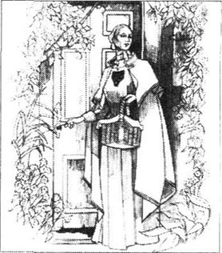
他把所有的财产——包括在英国的土地和房产——都留给了赫斯特·普林的女儿小珍珠。
于是，小珍珠就成了当时新英格兰最富有的人。这么一来，人们对赫斯特母女的态度自然不同了。许多家庭在考虑将来的时候，都不再把珍珠视为罪恶所生的孩子，反而把她看做是儿子们将来最合适的妻子！但是奇林沃思去世后不久，赫斯特和珍珠就消失了，后来许多年当中，都没有人知道她们的行踪。
人们把红字的故事告诉孩子们，以及孩子的孩子们。那个可怜牧师的丧生之地——绞刑台还保留着，它始终是一个有力的耻辱的警示。
后来，有一天下午，几个孩子正在赫斯特住过的茅屋附近玩耍，忽然看见一个身穿灰衣的高个子女人走近屋门。多年以来，屋门从没打开过，但是那女人似乎在走进房子之前开了锁。她在门口处转过身来，回头张望——时间足以让人看到她胸前的红字。赫斯特·普林回来了！
可是小珍珠在哪里呢？她现在应该长大了。她还活着吗？谁也不知道，谁也没有找到答案。不过，从赫斯特后来的生活来看，她常接到来自英国的信件，而且那间茅屋里有一些漂亮的奢侈用品，虽然赫斯特从来不用，但这些东西表达了别人对她的牵挂。有一次，有人看到赫斯特用最华美的金线绣一件婴儿的衣服。
所有这些都使人们相信，珍珠不但活在世上，而且结了婚，生活得很幸福。她一直惦记着母亲，如果赫斯特乐意的话，珍珠在英格兰的家永远准备迎接她的母亲。
但是对赫斯特·普林来说，她的生命在新英格兰。她在这里犯下罪孽，也要在这里终老此生。她心甘情愿地回来了，并且又戴上了那个红字。
从那以后，那红字就再也没离开过她的胸前。但是随着岁月的流逝，它不再是耻辱的烙印，却变成了一个令人哀伤的标志，提醒人们有一个做过错事的女人，而她承受了足够多的惩罚。人们，尤其是女人们，前来寻求她的建议，聆听她睿智的言语，以便在艰难苦痛的时刻得到安慰。
她去世的时候，在一座老坟旁边，又挖建了一座新坟，但两座坟只有一块墓碑。这是一块很普通的石头——今天你可能还会在那儿看到它，在那上面只有一个字母；这个字母曾被漆成猩红色。这个悲伤的故事以它开始，也以它结束。
ACTIVITIES: Before Reading
ACTIVITIES
Before Reading
1．Read the story introduction of the book. Which of these ideas would you agree with, and which do you think the Puritans of New England would agree with?
1) Adultery is a terrible sin which must be punished.
2) Adultery means a marriage has broken down and so it is best for everyone to finish the marriage.
3) It is more important to forgive than to punish.
4) You should be kind to somebody who has sinned, and help them to be good again.
5) You must never tell a lie.
6) If telling the truth will hurt another person, you should stay silent.
7) A child of adultery is a bad child, and must stay away from other children.
2．Can you guess what happens to these people in the story? Choose as many answers as you like.
Hester Hester's child Hester's lover Hester's husband
1) ...has a long life.
2) ...has a short life.
3) ...goes to prison.
4) ...finds happiness.
5) ...is punished for past sins.
6) ...becomes a stronger person.
7) ...leaves Boston.
8) ...forgives a sinner.
ACTIVITIES: While Reading
ACTIVITIES
While Reading
1．Read Chapters 1 and 2. Choose the best question-word for these questions and then answer them.
Who/What
1) ...was in the old wooden box with the papers?
2) ...punishments did the women suggest for Hester?
3) ...could the magistrates send to the scaffold?
4) ...was Hester's punishment for her sin?
5) ...had probably died before reaching Massachusetts?
6) ...name did Hester refuse to give to the priest?
7) ...did the prison officer bring to see Hester?
8) ...was Hester afraid that Roger would do to her and her child?
9) ...did Roger want to find?
10) ...did Roger want to do to this person?
11) ...did Roger ask Hester to do?
2．Before you read Chapter 3, can you guess what difficulties Hester will face? For each sentence, circle Y(Yes) or N (No).
1) Someone tries to kill her. Y/N
2) The Puritans want to take her child away from her. Y/N
3) The women try to make her leave the town. Y/N
4) People try to stop her getting any work. Y/N
5) Nobody in the shops will sell her any food. Y/N
3．Read Chapters 3 to 5. Are these sentences true (T) or false (F)? Rewrite the false ones with the correct information.
1) People gave Hester a lot of work because they felt sorry for her.
2) People wanted to take Pearl away from Hester and send her to England.
3) Arthur thought that Pearl should stay with her mother.
4) As time passed, some people began to think that Roger Chillingworth was sent by the Devil, not by God.
5) Arthur Dimmesdale often talked about the sickness of his soul, but Chillingworth refused to listen.
6) When Arthur told people that he was a hateful sinner, they believed him and talked about getting a new priest.
7) When Arthur saw Hester and Pearl, he asked them to go away and leave him alone on the scaffold.
8) Arthur was able to stand on the scaffold at night, but he was too afraid of public shame to do it in the daylight.
4．Before you read Chapter 6, what advice would you give Hester now? Choose some of these ideas.
1) You should tell Roger that you will tell everyone his secret unless he leaves Arthur alone.
2) You should tell Arthur to tell the world his secret.
3) You should tell Arthur to leave Boston.
4) You should leave Boston and make a new life somewhere else.
5) You should tell Arthur the truth about Roger.
5．Read Chapters 6 to 8. Then match these halves of sentences.
1) Hester had the respect of many people now...
2) Roger had changed from a kind person into an evil one...
3) Hester wanted Roger to forgive her and Arthur and become a wise, kind man again...
4) Arthur thought life was easier for Hester...
5) Hester advised Arthur to leave Boston...
6) Arthur was worried about getting to know Pearl...
7) Pearl did not want to go to her mother...
8) Hester and Arthur decided to return to England...
9) ...but Roger thought it was too late for that now.
10) ...until she had put the scarlet letter back on her bosom.
11) ...because everyone knew about her sin.
12) ...because she worked hard and lived a godly life.
13) ...because children did not usually like him.
14) ...since there they could live a quiet life more easily.
15) ...after he had spent seven years getting a cruel revenge.
16) ...so that he could begin a happy life somewhere else.
6．Before you read the last chapters, try to guess what happens on Election Day. Choose some of these ideas, and then choose names to complete those sentences.
1) Hester/Arthur/Pearl/Roger will leave Boston on the ship.
2) Roger/Arthur will tell everyone who Pearl's father is.
3) Hester/Arthur will kill Roger.
4) Hester/Arthur/Pearl will stand on the scaffold together.
5) Arthur/Roger will die.
ACTIVITIES: After Reading
ACTIVITIES
After Reading
1．When Hester and Pearl sailed back to England, what did Hester tell Pearl about her life with Roger and Arthur? Complete their conversation (use as many words as you like).
PEARL: Mother, why didn't your husband come with you to Boston?
HESTER: _______________________
PEARL: And how did you get to know my father?
HESTER: _______________________
PEARL: But how could you fall in love with him? You already had a husband, so it was a sin—breaking God's law.
HESTER: _______________________
PEARL: Two years! That's a long time. And when he suddenly appeared again, how did you feel?
HESTER: _______________________
PEARL: But why didn't he accuse my father in public?
HESTER: _______________________
PEARL: How horrible! Why didn't you tell me all this before, when my father was alive?
2．Pearl's last question in the activity above is an interesting one. Here are some possible answers. Choose the one you think best and explain why you prefer it.
1) You were too young to understand.
2) It was better for you not to know.
3) I didn't have the right to tell you other people's secrets.
4) Your father and my husband both had secrets, and children can't keep secrets.
5) If you didn't know, other people couldn't find things out from you.
6) I had wronged my husband, and I didn't want your father to go to prison, or die, so I had to keep their secrets from everybody. That meant you as well.
3．Here are some quotes from the story. What do they tell us about the speakers, or other characters in the story?
1) 'Heaven has allowed you public shame, and the chance to win an open battle with the evil inside you and the sadness outside. Do you refuse to give him [the child's father] that same chance—which he may be too afraid to take himself?
2) 'It is not for some magistrate to take off this letter. When—if ever—I earn the right to be rid of it, it will fall off without anyone's help.
3) 'You planted the evil, and now its black flowers are growing. We cannot change the way things are.'
4) 'That old man's revenge has been blacker than our sin, Hester!'
5) 'What a strange, sad man he is. He held your hand and mine at night on the scaffold, and again in the forest. But here on this sunny day, among all the people, he does not know us, and we must not speak to him.'
4．Look at these words from the story. Which heading would you put them under? Can some words go under more than one heading? Is there any word which does not belong under any heading?
| FEELINGS | THE LAW | RELIGION | SEWING |
| cloth | magistrate | pattern | revenge |
| godly | material | priest | sermon |
| guilty | mercy | prison | shame |
| heaven | misery | punishment | sin |
| innocent | needle | Puritan | soul |
| joy | passion | respect | thread |
5．This is how one of the townspeople described Arthur Dimmesdale's last moments. Put the parts of sentences in the right order, and join them with the best linking word from each pair. Begin with number 4.
1) He stood there in front of the crowd and cried out
2) after/but he pushed the doctor away
3) if/because almost at once the priest fell to the ground.
4) Yes, I was there, quite close to Mr Dimmesdale
5) yet/and climbed up onto the scaffold with Mistress Prynne and the child.
6) However,/Whatever, the poor child did not have a father for very long,
7) that/to see the great, scarlet letter 'A' on his chest,
8) While/After little Pearl had kissed him,
9) though/when he stopped next to the scaffold
10) whether/that he was as great a sinner as Hester Prynne.
11) and then/now that he died in Mistress Prynne's arms.
12) and/or called out to Mistress Prynne and her little girl.
13) Meanwhile,/Finally, he pulled open his shirt for us
14) The old doctor hurried up to him and caught his arm,
15) he thanked God for his mercy,
16) who/which means, of course, that he is the father of Hester Prynne's child!
6．Imagine that you could give the story a different ending. Choose one of the endings below, and use the notes to write a paragraph. Which ending—including the original one—do you prefer, and why?
● Arthur confesses on scaffold/does not die/sails to England with Hester and Pearl (What happens to Roger?)
● Arthur does not confess/leaves with Hester and Pearl for new life somewhere in America (Does Roger stay or go?)
● Arthur does not confess/Roger tells Arthur's secret/Arthur goes to prison/Hester and Pearl go on living in Boston
● Arthur confesses/goes to prison/Hester sent back to Roger/dies mysteriously (What happens to Pearl?)
7．If you could choose a different letter for Hester to wear, which word would it be for—S for sinful, B for brave? Choose a letter for Hester, Roger, Arthur, and Pearl to wear, and explain why that word says something important about that character.
封底
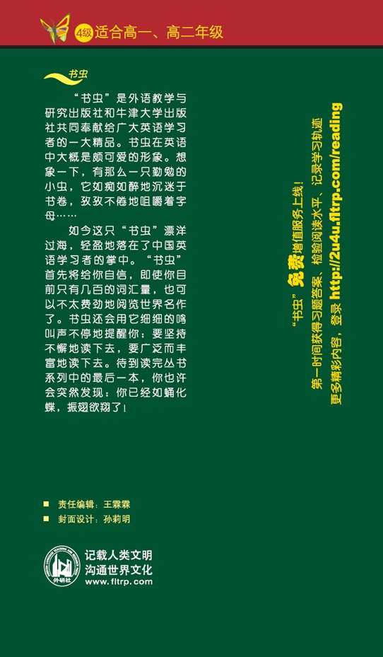